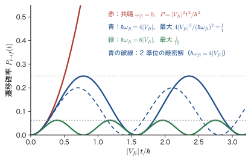
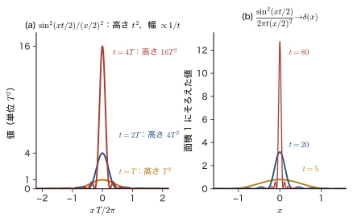
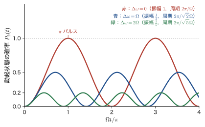
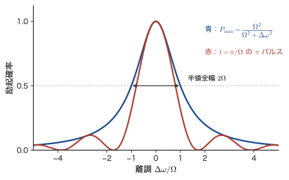
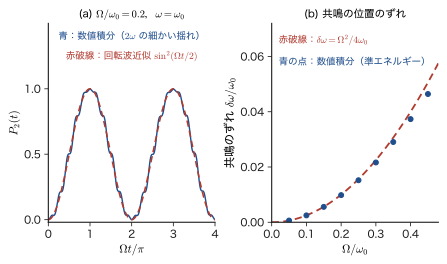
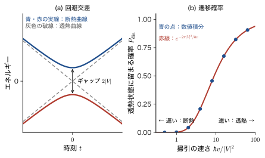

第51章時間依存摂動論と Fermi の黄金律 — 遷移確率・Rabi 振動・断熱近似
ルビーが赤いのは，$\mathrm{Cr^{3+}}$ の $3d$ 電子が黄緑〜青紫の光を吸って上の準位へ移るからだった（第48章）．そこでは「光子のエネルギーが準位の間隔 $\Delta E$ に等しいときに吸収が起こる」という Bohr の振動数条件 $h\nu=\Delta E$ を，実験事実として使った．では，この吸収は，Schrödinger（シュレーディンガー）方程式から，どのように出てくるのだろうか．電子が下の準位から上の準位へ移る確率はどれくらいか．その確率は，光の強さや，光をあてている時間にどう依存するのか．光の振動数が準位間隔からずれたら，どうなるのか．前の 2 つの章で時間の変化を追う道具（第49章の定常状態の重ね合わせ，第50章の時間発展演算子と相互作用表示）をそろえたので，この章でいよいよ，これらの問いに答える．
古典物理の対応物は，共振である．ブランコをこぐとき，固有振動数に合わせて押せば，小さな力でも振幅はどんどん大きくなる．固有振動数からずれた振動数で押すと，振幅は大きくならず，むしろ行ったり来たりするだけになる（AD 03 第7章 7.4の強制振動）．量子力学では，「ブランコの振幅」にあたるものが「上の準位にいる確率」であり，外から加える力にあたるものが，時間とともに変化する小さなハミルトニアン $\hat{H}_1(t)$（光の電場，パルス磁場，ゆっくり動かした壁など）である．全体のハミルトニアン $\hat{H}=\hat{H}_0+\hat{H}_1(t)$ のうち，$\hat{H}_0$ の固有状態 $\ket{n}$ はすでにわかっているものとし，時刻 $t$ の状態を $\ket{n}$ の重ね合わせ $\sum_nc_n(t)\ket{n}$ で表すと，外場 $\hat{H}_1(t)$ が「係数 $c_n(t)$ を時間とともに変える」ことで，状態から状態への乗り移り（遷移，transition）が起こる．
第V部（第27章）の摂動論は，時間によらない摂動 $\hat{V}$ がエネルギー準位と固有状態を少しだけずらす問題だった．本章の時間依存摂動論は，時間に依存する $\hat{H}_1(t)$ が状態から状態への乗り移りを起こす問題である．ずれの大きさを求める代わりに，「時間 $t$ の間に始状態 $\ket{i}$ から終状態 $\ket{f}$ へ移る確率 $P_{i\to f}(t)$」を求める．これが，吸収・発光・散乱・電流など，材料の「はたらき」を決める量の出発点になる．
この章は 4 つの話題からなる．(1) 摂動の 1 次までで遷移確率を求め，定数摂動の場合に確率が $t^2$ に比例して増える共鳴と，$\sin^2$ で振動する非共鳴の違いを調べる（51.1 節）．(2) 振動する摂動 $\hat{H}_1(t)=\hat{V}e^{-i\omega t}+\hat{V}^\dagger e^{i\omega t}$ に対して，終状態が連続準位のとき，遷移確率が時間に比例して増え，「遷移率」$w=\dfrac{2\pi}{\hbar}\abs{V_{fi}}^2g(E_f)$ が定まる（Fermi の黄金律）．走査トンネル顕微鏡（STM）の電流は，この式で理解できる（51.2 節）．(3) 終状態が 1 個の離散準位のときは，黄金律は使えず，確率は行ったり来たりを繰り返す（Rabi（ラービ）振動）．電子スピン共鳴（ESR），核磁気共鳴（NMR），量子ビットの操作は，この振動を使う（51.3 節）．(4) 摂動をゆっくり加える極限（断熱近似）と突然加える極限（突然近似，49.5 節）を比べ，断熱近似の先にある Berry（ベリー）位相と Landau–Zener（ランダウ–ツェナー）の公式への入口を示す（51.4 節）．4 つの話題は別々の理論ではなく，すべて同じ時間を含む Schrödinger 方程式（$\hat{H}_0$ の固有状態で展開した連立方程式 $i\hbar\dot{c}_m=\sum_nV_{mn}(t)\,e^{i\omega_{mn}t}c_n$）を，別の近似で解いたものである．
- 時間に依存する摂動の下での展開係数 $c_m(t)$ の連立方程式 $i\hbar\dot{c}_m=\sum_nV_{mn}(t)e^{i\omega_{mn}t}c_n$ を導き，1 次の遷移振幅 $c_f^{(1)}=-\dfrac{i}{\hbar}\displaystyle\int_0^tV_{fi}(t')e^{i\omega_{fi}t'}\dd t'$ と遷移確率 $P=\abs{c_f^{(1)}}^2$，2 次の振幅 $c_f^{(2)}$（中間状態をはさむ過程）を書けること
- 定数摂動の遷移確率 $P=\dfrac{4\abs{V_{fi}}^2\sin^2(\omega_{fi}t/2)}{(\hbar\omega_{fi})^2}$ を導き，共鳴（$\omega_{fi}=0$）では $t^2$ に比例すること，突然加えた場合と断熱的（$e^{\eta t}$）に加えた場合の違い，時間幅 $t$ の摂動が幅 $\sim h/t$ のエネルギー範囲の準位を励起すること（エネルギーと時間の不確定性）を説明できること
- $\dfrac{\sin^2(xt/2)}{(x/2)^2}\to2\pi t\,\delta(x)$ を導いて，Fermi の黄金律 $w=\dfrac{2\pi}{\hbar}\abs{V_{fi}}^2\delta(E_f-E_i\mp\hbar\omega)=\dfrac{2\pi}{\hbar}\abs{V_{fi}}^2g(E_f)$ を得ること，適用範囲 $1/\omega_{fi}\ll t\ll1/w$ と落とし穴を説明できること
- STM のトンネル電流を Bardeen の遷移ハミルトニアンと黄金律で表し，Tersoff–Hamann（ターソフ–ハーマン）の結果（電流は試料の局所状態密度に比例）を説明できること
- 二準位系 $\hat{H}=\tfrac{\hbar\omega_0}{2}\sigma_z+\hbar\Omega\cos\omega t\,\sigma_x$ を回転波近似で解いて Rabi の公式 $P_2=\dfrac{\Omega^2}{\Omega^2+\Delta\omega^2}\sin^2\dfrac{\sqrt{\Omega^2+\Delta\omega^2}\,t}{2}$ を導き，$\pi$ パルス・$\pi/2$ パルス・Bloch 球・Ramsey（ラムジー）干渉・Bloch–Siegert（ブロッホ–ジーゲルト）シフト $\Omega^2/4\omega_0$ を説明できること
- 断熱定理を導き，動的位相と Berry 位相 $\gamma_n=i\oint\braket{n}{\nabla_Rn}\cdot\dd\bm{R}$ を区別し，スピン 1/2 で $\gamma=-\pi(1-\cos\theta)$ を求められること．Landau–Zener の公式 $P_{\mathrm{dia}}=\exp\bigl(-2\pi\abs{V}^2/\hbar\abs{v}\bigr)$ を使えること
- 本書の前の章：時間依存の Schrödinger 方程式と突然近似（第49章，特に 49.5 節），時間発展演算子と相互作用表示（第50章，特に 50.5 節），時間によらない摂動論（第27章）と 2 準位系（28.3 節），スピン 1/2 と Pauli 行列（23.7 節．磁場中のスピンは 23.9 節），トンネル効果（12.7 節の STM）．
- 数学：δ 関数の定義（大学数学 第30章 30.3），矩形パルスの Fourier 変換（30.2），行列の指数（大学数学 第12章 12.4）．
- 物理：強制振動と共振（AD 03 第7章 7.4），2 準位系とスピン（大学基礎物理学 第51章 51.3），3 次元の状態密度 $g(\varepsilon)$（大学基礎物理学 第52章 52.8）．
- 姉妹編との関係：線形応答理論（AD 08）の第6章では，相互作用表示と Dyson 級数，断熱的なスイッチオン $e^{\eta t}$ を扱う（6.6，6.8）．本章の 1 次の遷移振幅は，その入口にあたる．
51.1 遷移振幅の摂動展開と定数摂動 — 「準位のずれ」から「状態の乗り移り」へ
51.1.1 何が変わるのか — 時間によらない摂動論との違い
第V部では，ハミルトニアンが $\hat{H}=\hat{H}_0+\lambda\hat{V}$ と書け，$\hat{V}$ は時間に依存しなかった．このとき系は定常状態にあり，求めるものは，$\hat{V}$ で少しずれたエネルギー $E_n=E_n^{(0)}+E_n^{(1)}+\cdots$ と，少し混ざった固有状態 $\psi_n=\psi_n^{(0)}+\psi_n^{(1)}+\cdots$ だった．ここでは，外から時間とともに変わる小さな摂動が加わる場合を考える．
\begin{equation} \hat{H}(t)=\hat{H}_0+\hat{H}_1(t) \label{eq:51-H} \end{equation}$\hat{H}_0$ は時間によらず，固有値と固有状態（正規直交完全系）$\hat{H}_0\ket{n}=E_n\ket{n}$ がすでにわかっているものとする．$\hat{H}_1(t)$ は外場（光の電場，磁場のパルス，試料に加えた電圧など）による小さな項で，エルミートである．$\hat{H}_1(t)$ の行列要素を
\begin{equation} V_{mn}(t)\equiv\mel{m}{\hat{H}_1(t)}{n},\qquad V_{nm}(t)=V_{mn}(t)^*,\qquad \omega_{mn}\equiv\frac{E_m-E_n}{\hbar} \label{eq:51-Vmn} \end{equation}と書く（$\omega_{mn}$ は 2 準位の間隔に対応する振動数．$\omega_{mn}=-\omega_{nm}$）．$\hat{H}_1(t)$ は時間に依存するので，$\hat{H}(t)$ は定常状態をもたない．この状況で問うべきことは，「時刻 $0$ に $\hat{H}_0$ の固有状態 $\ket{i}$（initial）にいた系が，時刻 $t$ に別の固有状態 $\ket{f}$（final）にいる確率はいくらか」である．これを遷移確率（transition probability）$P_{i\to f}(t)$ とよぶ．
| 時間によらない摂動論（第27章） | 時間依存摂動論（本章） | |
|---|---|---|
| 摂動 | $\hat{V}$（時間に依存しない） | $\hat{H}_1(t)$（時間とともに変わる） |
| 系の状態 | 定常状態（固有状態） | 時間とともに変わる重ね合わせ $\sum_nc_n(t)\ket{n}$ |
| 求めるもの | エネルギーのずれ $E_n^{(1)},E_n^{(2)}$，固有状態の補正 | 遷移確率 $P_{i\to f}(t)$，遷移率 $w$ |
| 古典力学の対応物 | ばねの定数が少し変わって固有振動数がずれる | 外力でゆさぶって別の振動モードに移す（共振） |
| 材料との関わり | 準位の分裂（Stark 効果，Zeeman 効果，配位子場） | 光の吸収・発光，STM の電流，磁気共鳴 |
51.1.2 遷移振幅の連立方程式
時刻 $t$ の状態 $\ket{\Psi(t)}$ を，$\hat{H}_0$ の固有状態で展開する．ただし，$\hat{H}_0$ だけのときに定常状態が取る位相因子 $e^{-iE_nt/\hbar}$ をあらかじめ取り出しておく：
\begin{equation} \ket{\Psi(t)}=\sum_nc_n(t)\,e^{-iE_nt/\hbar}\ket{n} \label{eq:51-expand} \end{equation}$\hat{H}_1=0$ なら，$c_n$ は定数である（第49章の定常状態の重ね合わせ $\Psi=\sum_nA_n\psi_ne^{-iE_nt/\hbar}$ の $A_n$ にあたる）．したがって，$c_n(t)$ が時間とともに変わるとすれば，それはすべて $\hat{H}_1(t)$ のせいである．$c_n(t)$ は，第50章の相互作用表示で $\hat{H}_0$ の固有状態 $\ket{n}$ に対する成分として出てきた量と同じものである（50.5 節）．50.5.6 節で相互作用表示から導いた連立方程式と同じ式を，ここでは Schrödinger 方程式から直接導いておく（以後の出発点になる式なので，手短かに確かめる）．
導出：$c_m(t)$ の連立方程式
式 \eqref{eq:51-expand} を $i\hbar\,\partial_t\ket{\Psi}=(\hat{H}_0+\hat{H}_1)\ket{\Psi}$ に代入する．左辺は $\sum_n\bigl[i\hbar\dot{c}_n+E_nc_n\bigr]e^{-iE_nt/\hbar}\ket{n}$（$e^{-iE_nt/\hbar}$ の微分から $E_nc_n$ が出る）で，右辺の $\hat{H}_0$ の部分 $\sum_nE_nc_ne^{-iE_nt/\hbar}\ket{n}$ と $E_nc_n$ の項が打ち消し合うから，
$$ \sum_ni\hbar\dot{c}_n(t)\,e^{-iE_nt/\hbar}\ket{n}=\sum_nc_n(t)\,e^{-iE_nt/\hbar}\,\hat{H}_1(t)\ket{n} $$が残る．左から $\bra{m}$ をかけ（$\braket{m}{n}=\delta_{mn}$），両辺に $e^{iE_mt/\hbar}$ をかけて $e^{i(E_m-E_n)t/\hbar}=e^{i\omega_{mn}t}$ とまとめると，次の式を得る．
（導出終わり）
公式51.1 遷移振幅の連立方程式（厳密）
\begin{equation} i\hbar\,\dot{c}_m(t)=\sum_nV_{mn}(t)\,e^{i\omega_{mn}t}\,c_n(t) \label{eq:51-cm} \end{equation}初期条件は，時刻 $0$ に状態 $\ket{i}$ にいるとして $c_n(0)=\delta_{ni}$．時刻 $t$ に状態 $\ket{f}$ に見いだされる確率，すなわち遷移確率は，$P_{i\to f}(t)=\abs{\braket{f}{\Psi(t)}}^2=\abs{c_f(t)}^2$ である（位相因子 $e^{-iE_ft/\hbar}$ の絶対値は 1）．
式 \eqref{eq:51-cm} は近似を含まない．$\hat{H}_1(t)$ がどんな大きさ・形であっても成り立つ，Schrödinger 方程式そのものである．$c_m$ に関する 1 階の連立微分方程式で，「$n$ から $m$ への乗り移りの強さ」が摂動の行列要素 $V_{mn}(t)$ で，その乗り移りが，準位間隔の振動数 $\omega_{mn}$ で回る位相因子 $e^{i\omega_{mn}t}$ をともなう，という構造をしている．確率の保存 $\sum_m\abs{c_m}^2=1$ も，式 \eqref{eq:51-cm} とその複素共役から確かめられる：
\begin{equation} \frac{\dd}{\dd t}\sum_m\abs{c_m}^2=\sum_m\bigl(\dot{c}_m^*c_m+c_m^*\dot{c}_m\bigr)=\frac{1}{i\hbar}\sum_{m,n}\Bigl[c_m^*V_{mn}e^{i\omega_{mn}t}c_n-c_n^*V_{nm}e^{i\omega_{nm}t}c_m\Bigr]=0 \label{eq:51-norm} \end{equation}（第 2 項で $m$ と $n$ の名前を入れ替えると，$V_{mn}^*=V_{nm}$ と $e^{-i\omega_{mn}t}=e^{i\omega_{nm}t}$ により，第 1 項と打ち消し合う）．
51.1.3 摂動展開：0 次・1 次・2 次
式 \eqref{eq:51-cm} を厳密に解くのは，一般には難しい．そこで，$\hat{H}_1$ が小さいとして，$\hat{H}_1\to\lambda\hat{H}_1$ とおき，第V部と同じ $\lambda$ による展開を行う：$c_m=c_m^{(0)}+\lambda c_m^{(1)}+\lambda^2c_m^{(2)}+\cdots$．式 \eqref{eq:51-cm} の両辺の $\lambda^{k+1}$ の係数を比べると，右辺の $V_{mn}$ に $\lambda$ がかかっているので，
\begin{equation} i\hbar\,\dot{c}_m^{(k+1)}(t)=\sum_nV_{mn}(t)\,e^{i\omega_{mn}t}\,c_n^{(k)}(t),\qquad c_n^{(0)}=\delta_{ni},\quad c_n^{(k\ge1)}(0)=0 \label{eq:51-order} \end{equation}という漸化式が得られる（初期条件 $c_n(0)=\delta_{ni}$ を $0$ 次に割り当てた）．$k$ 次の解を，$(k+1)$ 次の右辺に代入して積分するだけである．
- 0 次：$c_n^{(0)}=\delta_{ni}$．摂動がなければ，系は $\ket{i}$ のままである．
- 1 次：$n=i$ の項だけが残るので $i\hbar\,\dot{c}_f^{(1)}=V_{fi}(t)\,e^{i\omega_{fi}t}$．時刻 $0$ から $t$ まで積分して（$c_f^{(1)}(0)=0$），
$P_{i\to f}(t)$ は，「1 次の遷移振幅の絶対値の 2 乗」である．遷移振幅は，摂動の行列要素 $V_{fi}(t')$ に，準位間隔で回る位相 $e^{i\omega_{fi}t'}$ をかけて時間積分したものになっている．被積分関数が全時間にわたって同じ向きに回るとき（位相が打ち消し合わないとき）に大きな振幅が得られる．これが「共鳴」の意味で，以下で詳しく見る．なお，外場が弱いとき 1 次の遷移振幅だけで応答を求めるこの扱いは，線形応答理論（久保公式）の出発点でもある（第54章）．
- 2 次：式 \eqref{eq:51-order} で $k=1$ とし，$c_n^{(1)}(t'')$（\eqref{eq:51-c1} の $f\to n$）を代入する．$c_f^{(2)}(0)=0$ として積分すると，
である．この式は，「時刻 $t''$ に摂動で $\ket{i}\to\ket{n}$ と移り，その後の時刻 $t'\ (\gt t'')$ にもう一度摂動で $\ket{n}\to\ket{f}$ と移る」という 2 段階の過程の振幅を，あらゆる中間状態 $\ket{n}$ と，あらゆる時刻の組 $t''\lt t'$ について足し合わせたものである．時間順序 $t''\lt t'$ は，積分範囲 $0\le t''\le t'\le t$ に現れている（第50章で導いた Dyson 級数の 2 次の項，50.5 節）．中間状態 $\ket{n}$ は，エネルギー保存を満たす必要がない仮想的な状態であり，最終的に観測されるのは $\ket{f}$ だけである．2 次の過程は，1 次では起こらない遷移（たとえば $\ket{i}$ から $\ket{f}$ への直接の遷移が禁止されているとき，$V_{fi}=0$）を起こす．光子を 2 個同時に吸収する二光子吸収や，光を吸った分子が別のエネルギーの光を出す Raman（ラマン）散乱は，2 次の過程である（演習51.2）．
注意：1 次の結果が信頼できる条件
1 次の遷移確率 \eqref{eq:51-c1} は，摂動の 1 次までをとった近似である．$P_{i\to f}\ll1$ が条件で，もう少し正確には，すべての終状態への確率の和 $\sum_{f\ne i}P_{i\to f}(t)\ll1$ であること，つまり始状態 $\ket{i}$ の確率 $\abs{c_i}^2\simeq1$ がほとんど減っていないことが必要である．1 次の計算では，始状態の確率を $\abs{c_i}^2=1$ と置いたまま $P_{i\to f}$ を計算している．したがって，$P$ が $1$ に近づく，あるいは確率の総和が $1$ を超えるような結果が出たら，1 次摂動の範囲を超えている（確率の保存 \eqref{eq:51-norm} を満たすには，$\abs{c_i}^2$ の減少分を 2 次の量として取り入れる必要がある）．離散準位 2 個の間の遷移では，摂動が十分に長く続くと $P$ が $1$ に届き，確率が行ったり来たりするようになる．これが 51.3 節の Rabi 振動である．
51.1.4 定数摂動 — スイッチを入れたあとの遷移
もっとも簡単な場合として，摂動が時刻 $t=0$ に突然スイッチオンされ，その後は時間によらず一定の $\hat{V}$ だとする：$\hat{H}_1(t)=\hat{V}$（$t\ge0$）．行列要素 $V_{fi}$ は定数なので，式 \eqref{eq:51-c1} の積分は指数関数の積分である：
\begin{equation} c_f^{(1)}(t)=-\frac{i}{\hbar}V_{fi}\int_0^te^{i\omega_{fi}t'}\dd t'=-\frac{i}{\hbar}V_{fi}\,\frac{e^{i\omega_{fi}t}-1}{i\omega_{fi}}=-\frac{V_{fi}}{\hbar\omega_{fi}}\bigl(e^{i\omega_{fi}t}-1\bigr) \label{eq:51-cconst} \end{equation}絶対値の 2 乗をとる．$\abs{e^{i\theta}-1}^2=(e^{i\theta}-1)(e^{-i\theta}-1)=2-2\cos\theta=4\sin^2(\theta/2)$ を $\theta=\omega_{fi}t$ として使うと，
を得る．これが，定数摂動の遷移確率である．この式の意味を 2 つの場合に分けて読む（図51.1）．
- $\omega_{fi}\ne0$（準位が離れているとき）：$P$ は周期 $2\pi/\omega_{fi}=h/(E_f-E_i)$ で $0$ と最大値 $\dfrac{4\abs{V_{fi}}^2}{(\hbar\omega_{fi})^2}$ の間を振動する．$\abs{V_{fi}}\ll\hbar\abs{\omega_{fi}}$ なら，最大値は小さい．準位が離れていれば，摂動で終状態へ漏れ出す確率は小さく，しかも長くは続かず，すぐに元へ戻ってしまう．
- $\omega_{fi}\to0$（縮退に近いとき）：$\sin x\approx x$ を使うと，$P\to\dfrac{4\abs{V_{fi}}^2}{(\hbar\omega_{fi})^2}\Bigl(\dfrac{\omega_{fi}t}{2}\Bigr)^2=\dfrac{\abs{V_{fi}}^2t^2}{\hbar^2}$．確率は時間の 2 乗に比例して増え続ける．位相 $e^{i\omega_{fi}t'}$ が回らないので，振幅が同じ向きに足され続けるからである．これが共鳴の極限である．

イメージ：第V部の「状態の混じり」との対応
準位が離れているとき，式 \eqref{eq:51-cconst} は 2 つの項に分けられる：$c_f^{(1)}=-\dfrac{V_{fi}}{\hbar\omega_{fi}}e^{i\omega_{fi}t}+\dfrac{V_{fi}}{\hbar\omega_{fi}}$．第 1 項の大きさ $\dfrac{\abs{V_{fi}}}{\hbar\abs{\omega_{fi}}}$ は，時間によらない摂動論（27.3 節）の固有状態の 1 次の補正 $\psi_i^{(1)}=\sum_f\dfrac{V_{fi}}{E_i-E_f}\ket{f}$ の係数 $\dfrac{V_{fi}}{E_i-E_f}=-\dfrac{V_{fi}}{\hbar\omega_{fi}}$ と同じ大きさである．摂動をかけると，系は摂動された系の固有状態（$\ket{i}$ に $\ket{f}$ がわずかに混ざった状態）に「なる」べきである．その部分が第 1 項である．しかし，スイッチを突然入れると，状態は入れた瞬間には $\ket{i}$ のままで（$c_f(0)=0$ が必要），新しい固有状態にはなっていない．この食い違いを帳消しにするのが，時間によらない第 2 項である．結果として，$\abs{c_f}^2$ は $0$ から最大 $4\abs{V_{fi}/\hbar\omega_{fi}}^2$ の間を振動し，時間平均は $2\abs{V_{fi}/\hbar\omega_{fi}}^2$ になる．混じりの大きさ $\abs{V_{fi}/\hbar\omega_{fi}}^2$ の，時間平均で 2 倍，最大で 4 倍である．スイッチの入れ方が速すぎることによる余分な励起は，次の節で見る断熱的な入れ方では消える．
例題51.1 突然スイッチオンした定数摂動 — 2 準位 $\Delta E=0.1\ \mathrm{eV}$
エネルギー差 $E_f-E_i=\Delta E=0.10\ \mathrm{eV}$ の 2 準位の系に，時刻 $0$ に突然，行列要素 $\abs{V_{fi}}=1.0\ \mathrm{meV}$ の定数摂動を加える．(1) $P_{i\to f}$ の最大値を求めよ．(2) $P_{i\to f}(t)$ の振動の周期を求めよ．(3) この 1 次摂動の結果は，2 準位系の厳密解 $P=\dfrac{4\abs{V_{fi}}^2}{\Delta E^2+4\abs{V_{fi}}^2}\sin^2\dfrac{\sqrt{\Delta E^2+4\abs{V_{fi}}^2}\,t}{2\hbar}$ と，最大値でどれだけ違うか．
解答 (1) 式 \eqref{eq:51-Pconst} の $\sin^2$ を $1$ として，$P_{\max}=\dfrac{4\abs{V_{fi}}^2}{\Delta E^2}=\dfrac{4\times(1.0\times10^{-3}\ \mathrm{eV})^2}{(0.10\ \mathrm{eV})^2}=\dfrac{4\times10^{-6}}{10^{-2}}=4.0\times10^{-4}$．$P\ll1$ なので，1 次摂動は妥当である．
(2) $\sin^2(\omega_{fi}t/2)$ の周期は $2\pi/\omega_{fi}$ である．$\omega_{fi}=\Delta E/\hbar$ なので，周期は $\dfrac{2\pi\hbar}{\Delta E}=\dfrac{h}{\Delta E}=\dfrac{4.1357\times10^{-15}\ \mathrm{eV\,s}}{0.10\ \mathrm{eV}}=4.14\times10^{-14}\ \mathrm{s}=41\ \mathrm{fs}$ である（$h=4.1357\times10^{-15}\ \mathrm{eV\,s}$）．
(3) 厳密解の最大値は $\dfrac{4\abs{V_{fi}}^2}{\Delta E^2+4\abs{V_{fi}}^2}=\dfrac{4\times10^{-6}}{10^{-2}+4\times10^{-6}}=3.9984\times10^{-4}$ で，1 次摂動の値 $4.0000\times10^{-4}$ との相対差は $4\times10^{-4}$ である．厳密解の振動数も $\sqrt{\Delta E^2+4\abs{V_{fi}}^2}/\hbar$ で，$\Delta E/\hbar$ から $2\times10^{-4}$ だけ大きくなるだけである．$\abs{V_{fi}}/\Delta E=0.01$ と小さいので，1 次摂動で十分正確である．図51.1 の破線と実線の差が $\hbar\omega_{fi}=4\abs{V_{fi}}$ で 2 割ほどあるのは，$\abs{V_{fi}}/\Delta E=\frac14$ と大きいからである．なお，この厳密解は 51.3.3 節の Rabi の公式 \eqref{eq:51-rabi} で，結合 $\hbar\Omega/2$ を $\abs{V_{fi}}$ に，離調 $\Delta\omega$ を $\Delta E/\hbar$ に読み替えたものである（$\hbar\Omega_{\mathrm R}=\sqrt{\Delta E^2+4\abs{V_{fi}}^2}$）．51.3 節を読んだあとで確かめてみよう．
51.1.5 断熱的なスイッチオン $e^{\eta t}$
スイッチの入れ方を，突然ではなく，非常にゆっくりにしたらどうなるだろうか．これを表すために，摂動に因子 $e^{\eta t}$（$\eta\gt0$ は小さな定数）をかけ，無限の過去 $t_0\to-\infty$ から加えておくことにする：
\begin{equation} \hat{H}_1(t)=e^{\eta t}\hat{V}\qquad(-\infty\lt t\lt\infty,\ \eta\to+0) \label{eq:51-adiabatic} \end{equation}$t\to-\infty$ では $e^{\eta t}\to0$ なので摂動は存在せず，系は $\hat{H}_0$ の固有状態 $\ket{i}$ にいると考えてよい．$t=0$ で摂動の大きさがちょうど $\hat{V}$ になり，$\eta\to0$ の極限は「摂動の加え方が無限にゆっくり」という意味になる（摂動の大きさが変化する時間尺度は $1/\eta$）．これを断熱的なスイッチオン（adiabatic switching）とよぶ．姉妹編の線形応答理論（AD 08）でも，この因子 $\eta\to+0$ を使う（AD 08 第6章 6.8 節）．式 \eqref{eq:51-c1} の積分の下限を $-\infty$ に，$\hat{V}$ の行列要素を定数 $V_{fi}$ にして計算する：
\begin{equation} c_f^{(1)}(t)=-\frac{i}{\hbar}V_{fi}\int_{-\infty}^te^{(\eta+i\omega_{fi})t'}\dd t'=-\frac{i}{\hbar}V_{fi}\,\frac{e^{(\eta+i\omega_{fi})t}}{\eta+i\omega_{fi}}=-\frac{V_{fi}}{\hbar}\,\frac{e^{i(\omega_{fi}-i\eta)t}}{\omega_{fi}-i\eta} \label{eq:51-cad} \end{equation}ここで，$\eta\gt0$ であるおかげで，下限 $t'\to-\infty$ で $e^{(\eta+i\omega_{fi})t'}\to0$ となって積分が収束すること，および最後の等号で $\dfrac{-i}{\eta+i\omega}=\dfrac{-i}{i(\omega-i\eta)}=\dfrac{-1}{\omega-i\eta}$ を使い，指数を $e^{(\eta+i\omega)t}=e^{i(\omega-i\eta)t}$ と書き直したことに注意する．$\eta\to+0$ とすると，分母の $\omega_{fi}-i\eta\to\omega_{fi}$ で，
$$ c_f^{(1)}(t)\longrightarrow-\frac{V_{fi}}{\hbar\omega_{fi}}\,e^{i\omega_{fi}t}=\frac{V_{fi}}{E_i-E_f}\,e^{i\omega_{fi}t}\qquad(\omega_{fi}\ne0) $$となる．これは，前節のイメージの箱で見た第 1 項そのもので，絶対値は時間によらない．摂動が加わったあとも，$\ket{i}$ に $\ket{f}$ がわずかに混ざった状態，すなわち第V部の 1 次の固有状態 $\ket{i}+\sum_f\dfrac{V_{fi}}{E_i-E_f}\ket{f}$ に，系がゆっくり追従することを表している．突然入れたときに現れた余分な項 $+V_{fi}/(\hbar\omega_{fi})$ は，断熱的に入れたときには生じない．分母の形 $\omega_{fi}-i\eta$ は，線形応答理論の応答関数や遅延 Green 関数（第55章）に現れる $\omega+i\eta$ と同じ種類のものである．また，$\omega_{fi}=0$ の近く（縮退に近い準位）では $\abs{c_f^{(1)}}$ が大きくなり，1 次摂動が破綻する．これは，第28章で見た縮退のある摂動論が必要な状況である．
例題51.2 断熱的に加えたときと，突然加えたときの励起の違い
$\hbar\omega_{fi}=E_f-E_i=0.10\ \mathrm{eV}$，$\abs{V_{fi}}=1.0\ \mathrm{meV}$ の 2 準位系に定数摂動 $\hat{V}$ を加える．(1) 断熱的に加えた場合，終状態 $\ket{f}$ の確率 $\abs{c_f}^2$ はいくらか．(2) 突然加えた場合の，$P_{i\to f}(t)$ の最大値と時間平均を求め，(1) と比べよ．(3) 断熱的に加える場合，$\eta\to+0$ とするとは具体的にはどういうことか．$\eta$ はどの量と比べて小さくなければならないか．
解答 (1) 式 \eqref{eq:51-cad} で $\eta\to+0$ とすると，$\abs{c_f}^2=\dfrac{\abs{V_{fi}}^2}{(\hbar\omega_{fi})^2}=\left(\dfrac{1.0\times10^{-3}}{0.10}\right)^2=1.0\times10^{-4}$ である．これは摂動された固有状態に含まれる $\ket{f}$ の確率で，時間によらない．
(2) 突然加えた場合の最大値は，例題51.1 の $4.0\times10^{-4}$，時間平均は $\sin^2$ の平均 $\frac12$ を使って $\dfrac{4\abs{V_{fi}}^2}{(\hbar\omega_{fi})^2}\times\dfrac12=2.0\times10^{-4}$ である．(1) の $1.0\times10^{-4}$ と比べると，最大値は 4 倍，時間平均は 2 倍である．突然入れることで，摂動された固有状態との「ずれ」の分だけ余分に励起される．
(3) 式 \eqref{eq:51-cad} の分母 $\omega_{fi}-i\eta$ で，$\eta$ が $\omega_{fi}$ に比べて小さければ $\eta$ を無視できる．すなわち $\eta\ll\abs{\omega_{fi}}$，摂動の大きさの変化の時間尺度 $1/\eta$ が，量子力学的な時間 $1/\abs{\omega_{fi}}$ より十分長いことが条件である．この例では $1/\abs{\omega_{fi}}=\hbar/(0.10\ \mathrm{eV})=6.6\ \mathrm{fs}$ なので，摂動を数 ps 以上かけてゆっくり入れれば，断熱的とみなしてよい．
51.1.6 時間幅とエネルギー幅
定数摂動の式 \eqref{eq:51-Pconst} には，量子力学らしい重要な性質がかくれている．長さ $t$ のあいだだけ摂動をかけたとき，遷移確率は $\sin^2(\omega_{fi}t/2)/(\omega_{fi}/2)^2$ に比例する．この関数は $\omega_{fi}=0$ で最大値（$t^2$）をとり，$\omega_{fi}=\pm2\pi/t$ で最初に $0$ になる（図51.2，次節）．つまり，時間 $t$ のあいだ加えた摂動で有意に励起できるのは，外場の振動数（いまは $0$）からのずれが $\abs{\omega_{fi}}\lesssim2\pi/t$，エネルギーでは
\begin{equation} \abs{E_f-E_i}\lesssim\frac{2\pi\hbar}{t}=\frac{h}{t} \label{eq:51-width} \end{equation}の範囲にある準位だけである．短い時間だけ摂動をかけると，幅広いエネルギー範囲の準位が一度に励起される．長くかければ，エネルギーがよく合う準位だけが励起される．これは，第8章の時間とエネルギーの不確定性関係 $\Delta E\cdot\Delta t\gtrsim\hbar$（第8章．第50章の Mandelstam–Tamm の関係，50.4 節）の，遷移確率による表現である．この関係は，「短いパルス光は，幅広い色（エネルギー）を含むから，幅広い準位を励起する」という，Fourier 変換でおなじみの事実とも同じである（AD 02 第30章 30.2の矩形パルスの Fourier 変換）．
例題51.3 短いパルスで励起できるエネルギー幅
継続時間 $t=100\ \mathrm{fs}$ の矩形パルスで，基底状態から励起できるエネルギーの範囲を $h/t$ で見積もれ．また，準位の間隔が $25\ \mathrm{meV}$ で並んだ準位群の中から，1 つの準位だけを選んで励起するには，パルスの長さはどのくらい必要か．半値全幅 $0.886\,h/t$ で評価した場合についても述べよ．
解答 $h=4.1357\times10^{-15}\ \mathrm{eV\,s}$ より，$\dfrac{h}{t}=\dfrac{4.1357\times10^{-15}\ \mathrm{eV\,s}}{100\times10^{-15}\ \mathrm{s}}=4.14\times10^{-2}\ \mathrm{eV}=41\ \mathrm{meV}$ である．共鳴エネルギーから $\pm41\ \mathrm{meV}$ の範囲（主ピークの零点から零点まで）の準位が励起される．主ピークの半値全幅は次のようにして決まる．$P\propto\sin^2u/u^2$（$u=\omega_{fi}t/2$）が最大値の半分になるのは，数値的に解いて $u=\pm1.3916$，すなわち $\omega_{fi}=\pm2.7832/t$ のときである．全幅は $2\times2.7832/t$ で，エネルギーに直すと $\dfrac{2\hbar\times2.7832}{t}=0.886\,\dfrac{h}{t}=36.6\ \mathrm{meV}$ となる（$2\times2.7832/(2\pi)=0.886$ を使った）．
25 meV 間隔の準位群を 1 つずつ分離して励起するには，主ピークの幅を間隔より小さくしなければならない．$h/t\lesssim25\ \mathrm{meV}$ とすると，$t\gtrsim\dfrac{4.1357\times10^{-15}\ \mathrm{eV\,s}}{25\times10^{-3}\ \mathrm{eV}}=1.65\times10^{-13}\ \mathrm{s}=165\ \mathrm{fs}$ である．半値全幅 $0.886\,h/t$ で評価すると，$0.886\,h/t\lesssim25\ \mathrm{meV}$ から $t\gtrsim\dfrac{0.886\times4.1357\times10^{-15}\ \mathrm{eV\,s}}{25\times10^{-3}\ \mathrm{eV}}=1.47\times10^{-13}\ \mathrm{s}=147\ \mathrm{fs}$ で，零点までの幅 $h/t$ による 165 fs より約 1 割短くてすむ．パルスが 100 fs のままだと，隣り合う準位が同時に励起される．逆に，$10\ \mathrm{fs}$ のパルスなら $h/t=414\ \mathrm{meV}$ で，たとえば Si の光学フォノン（約 $64\ \mathrm{meV}$，周期約 $64\ \mathrm{fs}$）の準位間隔よりはるかに広い範囲が一度に励起され，複数の振動準位の重ね合わせ（コヒーレントフォノン）ができる．そうして励起された重ね合わせは，量子ビート（第49章）として，準位間隔に対応する周期で振動する．
51.2 調和摂動と Fermi の黄金律 — 連続準位への遷移率
51.2.1 調和摂動と共鳴条件 — 吸収と誘導放出
光や高周波の電磁場のような，角振動数 $\omega$ で振動する外場を考える．外場は実数の物理量なので，$\hat{H}_1(t)$ は $e^{-i\omega t}$ と $e^{+i\omega t}$ の両方を含む．そこで，時刻 $t=0$ にスイッチオンされる調和摂動を，次の形に書く：
\begin{equation} \hat{H}_1(t)=\hat{V}\,e^{-i\omega t}+\hat{V}^\dagger e^{i\omega t}\qquad(t\ge0,\ \omega\gt0) \label{eq:51-harm} \end{equation}右辺の 2 項はたがいにエルミート共役で，$\hat{H}_1$ はエルミートである．たとえば，電場 $\bm{E}_0\cos\omega t$ が電気双極子 $\hat{\bm{d}}$ に及ぼす相互作用 $-\hat{\bm{d}}\cdot\bm{E}_0\cos\omega t$ は，$\cos\omega t=\tfrac12(e^{i\omega t}+e^{-i\omega t})$ から $\hat{V}=-\tfrac12\hat{\bm{d}}\cdot\bm{E}_0$ に対応する（第52章）．$\hat{V}$ 自身はエルミートでなくてもよい（光子を吸収する演算子など）ので，共役 $\hat{V}^\dagger$ を明示した．行列要素は $V_{fi}(t)=V_{fi}\,e^{-i\omega t}+(V^\dagger)_{fi}\,e^{i\omega t}$ で，$(V^\dagger)_{fi}=V_{if}^*$ である．
式 \eqref{eq:51-c1} に代入して，2 つの指数関数の積分を別々に行う．定数摂動の計算 \eqref{eq:51-cconst} の $\omega_{fi}$ を $\omega_{fi}-\omega$ および $\omega_{fi}+\omega$ に置き換えたものになる：
\begin{equation} c_f^{(1)}(t)=-\frac{1}{\hbar}\left[V_{fi}\,\frac{e^{i(\omega_{fi}-\omega)t}-1}{\omega_{fi}-\omega}+(V^\dagger)_{fi}\,\frac{e^{i(\omega_{fi}+\omega)t}-1}{\omega_{fi}+\omega}\right] \label{eq:51-charm} \end{equation}（$-\dfrac{i}{\hbar}\displaystyle\int_0^te^{i\Delta t'}\dd t'=-\dfrac{i}{\hbar}\dfrac{e^{i\Delta t}-1}{i\Delta}=-\dfrac{1}{\hbar}\dfrac{e^{i\Delta t}-1}{\Delta}$ を，$\Delta=\omega_{fi}\mp\omega$ に使った．）第 1 項は $\omega_{fi}\approx\omega$，つまり $E_f-E_i\approx\hbar\omega$ のときに分母が $0$ に近づいて大きくなり，第 2 項は $\omega_{fi}\approx-\omega$，つまり $E_f-E_i\approx-\hbar\omega$ のときに大きくなる．これが共鳴条件である．
- 吸収：$E_f=E_i+\hbar\omega$．系が外場からエネルギー $\hbar\omega$ をもらって上の準位へ移る．第 1 項が効く．
- 誘導放出：$E_f=E_i-\hbar\omega$．系が外場にエネルギー $\hbar\omega$ を与えて下の準位へ移る．第 2 項が効く．
$\omega\gt0$ なので，与えられた $(i,f)$ の組に対して共鳴できるのは，どちらか一方だけである．共鳴していない方の項は，分母が $\omega_{fi}\pm\omega\approx\pm2\omega$ や $\pm\omega_{fi}$ 程度の大きな値になり，しかも $\abs{e^{i\theta}-1}\le2$ なので，大きさが $\abs{V}/(\hbar\omega)$ を超えず，時間とともに大きくなることもない．共鳴する方の項だけを残すと，吸収の場合の遷移確率は，$\abs{e^{i\Delta t}-1}^2=4\sin^2(\Delta t/2)$ を使って，次のようになる：
\begin{equation} P_{i\to f}(t)=\frac{\abs{V_{fi}}^2}{\hbar^2}\,\frac{\sin^2\bigl[(\omega_{fi}-\omega)t/2\bigr]}{\bigl[(\omega_{fi}-\omega)/2\bigr]^2}\qquad(\omega_{fi}\approx\omega) \label{eq:51-Pharm} \end{equation}誘導放出の場合は，$V_{fi}\to(V^\dagger)_{fi}$，$\omega_{fi}-\omega\to\omega_{fi}+\omega$ と置き換えればよい．以下では，吸収の場合を書く．定数摂動の式 \eqref{eq:51-Pconst} も，$4\sin^2(\omega_{fi}t/2)/\omega_{fi}^2=F_t(\omega_{fi})$ なので，$P=\abs{V_{fi}}^2F_t(\omega_{fi})/\hbar^2$ と書け，式 \eqref{eq:51-Pharm} で $\omega=0$ としたものと同じ形である．離調 $x\equiv\omega_{fi}-\omega$ の関数として見ると，遷移確率の形は，次の関数 $F_t(x)$ で決まる．
51.2.2 関数 $\sin^2(xt/2)/(x/2)^2$ — $t\to\infty$ で $\delta$ 関数に
定義51.1 共鳴曲線 $F_t(x)$
\begin{equation} F_t(x)\equiv\frac{\sin^2(xt/2)}{(x/2)^2}=t^2\left[\frac{\sin(xt/2)}{xt/2}\right]^2 \label{eq:51-Ft} \end{equation}遷移確率 \eqref{eq:51-Pharm} は $P=\dfrac{\abs{V_{fi}}^2}{\hbar^2}F_t(\omega_{fi}-\omega)$ と書ける．$F_t(x)$ の形を調べよう（図51.2）．
- 高さ：$x\to0$ で $\sin(xt/2)/(xt/2)\to1$ なので，$F_t(0)=t^2$．時間の 2 乗に比例して高くなる．
- 幅：$\sin(xt/2)=0$ となる最初の $x$ は $xt/2=\pi$，すなわち $x=\pm2\pi/t$ である．主ピークの幅は $t$ に反比例して細くなる．
- 面積：$u=xt/2$ と置くと，$\dd x=\dfrac{2}{t}\dd u$ で，$F_t=t^2\dfrac{\sin^2u}{u^2}$ なので，$\displaystyle\int_{-\infty}^{\infty}F_t(x)\dd x=2t\int_{-\infty}^{\infty}\frac{\sin^2u}{u^2}\dd u$．最後の積分は，部分積分（$\dfrac{\dd}{\dd u}\bigl(-\tfrac1u\bigr)=\tfrac1{u^2}$ を使う）で $$ \int_{-\infty}^{\infty}\frac{\sin^2u}{u^2}\dd u=\Bigl[-\frac{\sin^2u}{u}\Bigr]_{-\infty}^{\infty}+\int_{-\infty}^{\infty}\frac{2\sin u\cos u}{u}\dd u=\int_{-\infty}^{\infty}\frac{\sin2u}{u}\dd u=\pi $$ となる（境界項は $0$，最後は $\displaystyle\int_{-\infty}^\infty\frac{\sin au}{u}\dd u=\pi$（$a\gt0$）という Dirichlet（ディリクレ）の積分で，$2u=v$ とおけば $\int\sin v/v\,\dd v=\pi$ に帰着する）．よって面積は $2\pi t$ で，$t$ に比例して増える．

以上をまとめると，$F_t(x)/(2\pi t)$ は，面積がつねに $1$ で，$t$ が大きいほど細く高くなる関数である．$t\to\infty$ では，$x=0$ 以外ではほとんど $0$，$x=0$ の近くに面積 $1$ が集中した関数，すなわち Dirac の $\delta$ 関数（次の囲み）になる：
数学の道具：$\delta$ 関数
Dirac の $\delta$ 関数 $\delta(x)$ は，$x\ne0$ で $0$，全体の積分が $1$ で，なめらかな任意の関数 $g(x)$ に対して $\displaystyle\int_{-\infty}^\infty\delta(x)\,g(x)\dd x=g(0)$ となるものである（大学数学 第30章 30.3）．通常の意味の関数ではなく，「面積 $1$ を保ったまま幅を $0$ に縮めていく関数列の極限」と思えばよい．式 \eqref{eq:51-delta} の意味は，任意のなめらかな $g(x)$ に対して，$g$ が幅 $2\pi/t$ のあいだにほとんど変化しなければ，$\int F_t(x)\,g(x)\dd x\approx g(0)\int F_t\dd x=2\pi t\,g(0)$ ということである．$\delta$ 関数の有用な性質として，$\delta(ax)=\delta(x)/\abs{a}$ がある．これを $x=\omega_{fi}-\omega=(E_f-E_i-\hbar\omega)/\hbar$ に使うと
$$ \delta(\omega_{fi}-\omega)=\hbar\,\delta(E_f-E_i-\hbar\omega) $$となる．エネルギー $E$ の $\delta$ 関数と角振動数の $\delta$ 関数は，$\hbar$ の違いだけである．なお，$\delta$ 関数の別の表し方として，幅 $\eta$ の Lorentz 関数 $\dfrac{1}{\pi}\dfrac{\eta}{x^2+\eta^2}$ の $\eta\to+0$ の極限もある（後の別の導出で使う）．これは，複素平面の極 $x=\pm i\eta$ の近くの $\dfrac{1}{x\mp i\eta}=\mathrm{P}\dfrac{1}{x}\pm i\pi\delta(x)$（$\mathrm{P}$ は Cauchy（コーシー）の主値）という Sokhotski–Plemelj（ソホツキ–プレメリ）の公式の実部と虚部に関係する（AD 08 第5章 5.11 節）．
51.2.3 Fermi の黄金律
式 \eqref{eq:51-delta} を式 \eqref{eq:51-Pharm} に代入しよう．$t$ が十分大きいとき，
\begin{equation} P_{i\to f}(t)\simeq\frac{\abs{V_{fi}}^2}{\hbar^2}\,2\pi t\,\delta(\omega_{fi}-\omega)=\frac{2\pi t}{\hbar}\abs{V_{fi}}^2\,\delta(E_f-E_i-\hbar\omega) \label{eq:51-Plin} \end{equation}となる．遷移確率は，共鳴条件 $E_f=E_i+\hbar\omega$ を満たす終状態に対して，時間 $t$ に比例して増える．したがって，単位時間あたりの遷移確率 $w=P/t$，すなわち遷移率（transition rate）が定まる：
\begin{equation} w_{i\to f}=\frac{2\pi}{\hbar}\abs{V_{fi}}^2\,\delta(E_f-E_i-\hbar\omega) \label{eq:51-golden0} \end{equation}ところが，この式は，終状態が 1 個の離散準位のとき，意味を失う．離散準位 $E_f$ がちょうど $E_i+\hbar\omega$ でなければ $w=0$，ちょうどなら $w=\infty$ になるからである．$\delta$ 関数は，終状態が連続的に並んでいて，状態の和（積分）をとったときにはじめて有限の値を与える．終状態が連続準位または非常に密に並んだ準位の集まりである場合を考えよう．単位エネルギー幅あたりの状態の数を状態密度（density of states）$g(E)$ と書く（AD 03 第52章 52.8 節の $g(\varepsilon)$ と同じ量）：$g(E)\dd E$ は，エネルギーが $E$ と $E+\dd E$ の間にある状態の数である．状態 $\ket{f}$ のエネルギーが $E_f$ で，状態の和 $\sum_f$ は，エネルギーについての積分 $\int g(E_f)\dd E_f$ になる．遷移確率の総和は
$$ P_{\mathrm{tot}}(t)=\sum_fP_{i\to f}(t)=\int\dd E_f\;g(E_f)\,\frac{\abs{V_{fi}}^2}{\hbar^2}\,F_t\!\Bigl(\frac{E_f-E_i}{\hbar}-\omega\Bigr) $$で，$F_t$ が幅 $\hbar\cdot2\pi/t$ のエネルギーの範囲にだけ値をもち，その間 $\abs{V_{fi}}^2g(E_f)$ がほとんど変化しないと見なせれば，$\int F_t\dd E_f=\hbar\cdot2\pi t$ を使って $\abs{V_{fi}}^2g(E_f)$ を $E_f=E_i+\hbar\omega$ での値でおきかえられる．したがって $P_{\mathrm{tot}}=\dfrac{2\pi t}{\hbar}\abs{V_{fi}}^2g(E_f)\Big|_{E_f=E_i+\hbar\omega}$ で，これを $t$ で割ったものが遷移率である．
法則51.1 Fermi の黄金律（Fermi's golden rule）
周期的な摂動 $\hat{H}_1(t)=\hat{V}e^{-i\omega t}+\hat{V}^\dagger e^{i\omega t}$ による，始状態 $\ket{i}$ から終状態 $\ket{f}$ への（単位時間あたりの）遷移率は，$w_{i\to f}=\dfrac{2\pi}{\hbar}\abs{V_{fi}}^2\delta(E_f-E_i\mp\hbar\omega)$（吸収は $-$，誘導放出は $+$．誘導放出では $V_{fi}$ を $(V^\dagger)_{fi}$ に置き換える）である．終状態が連続準位のとき，状態 $\ket{f}$ についての和をとると
\begin{equation} w=\frac{2\pi}{\hbar}\sum_f\abs{V_{fi}}^2\,\delta(E_f-E_i\mp\hbar\omega)=\frac{2\pi}{\hbar}\,\abs{V_{fi}}^2\,g(E_f)\Big|_{E_f=E_i\pm\hbar\omega} \label{eq:51-golden} \end{equation}である（吸収は $E_f=E_i+\hbar\omega$，誘導放出は $E_f=E_i-\hbar\omega$）．$g(E_f)$ は終状態の状態密度で，スピンなどの縮退の数を含む．$\abs{V_{fi}}^2$ がエネルギー $E_f$ をもつ複数の状態 $\ket{f}$ ごとに異なるときは，それらの平均 $\overline{\abs{V_{fi}}^2}$ をとる．
次元を確かめておく．$\abs{V_{fi}}^2$ は $[\mathrm{J}^2]$，$g(E_f)$ は $[\mathrm{J}^{-1}]$，$\hbar$ は $[\mathrm{J\,s}]$ なので，$w$ の単位は $\mathrm{J}^2\cdot\mathrm{J}^{-1}/(\mathrm{J\,s})=\mathrm{s}^{-1}$，単位時間あたりの確率になっている．この公式は，摂動が弱ければ（$\abs{V_{fi}}$ の 2 乗の範囲で）遷移率が摂動の強さの 2 乗に比例し，終状態の「行き先の数」$g(E_f)$ に比例すること，そしてエネルギーが保存する（$E_f=E_i\pm\hbar\omega$）遷移だけが起こることを述べている．Dirac が 1927 年に時間依存摂動論から導いたこの式を，Fermi がその有用さから「黄金律」とよんだ．光の吸収も，原子核の崩壊も，固体中の電子の散乱も，この式に帰着する．誘導放出の遷移率は，吸収の遷移率で $V_{fi}$ を $(V^\dagger)_{fi}=V_{if}^*$ に置き換えたものである．上の準位 $\ket{i}$ から下の準位 $\ket{f}$ への誘導放出の遷移率は $\abs{V_{if}}^2$ に比例し，下の準位 $\ket{f}$ から上の準位 $\ket{i}$ への吸収の遷移率も同じ $\abs{V_{if}}^2$ に比例する．外場が系を上げる確率と下げる確率が等しいという事実は，第52章で Einstein の係数 $B_{12}=B_{21}$（縮退がないとき）として現れる．また，半導体の光吸収では，価電子帯と伝導帯の組の状態密度（結合状態密度）が $g(E_f)$ の役割をして吸収端の形を決める（第53章）．
別の導出：断熱的にスイッチオンして黄金律を得る
$\sin^2$ を $\delta$ 関数に近づける代わりに，51.1.5 節の断熱因子 $e^{\eta t}$ を使っても，黄金律が得られる．摂動を $\hat{H}_1(t)=e^{\eta t}\bigl(\hat{V}e^{-i\omega t}+\hat{V}^\dagger e^{i\omega t}\bigr)$（$-\infty\lt t\lt\infty$）とし，吸収の項だけを見る．式 \eqref{eq:51-cad} の $\omega_{fi}$ を $\omega_{fi}-\omega$ に置き換えて，
$$ c_f^{(1)}(t)=-\frac{V_{fi}}{\hbar}\,\frac{e^{i(\omega_{fi}-\omega-i\eta)t}}{\omega_{fi}-\omega-i\eta},\qquad P_{i\to f}(t)=\frac{\abs{V_{fi}}^2}{\hbar^2}\,\frac{e^{2\eta t}}{(\omega_{fi}-\omega)^2+\eta^2} $$を得る（$\abs{e^{i(\omega_{fi}-\omega-i\eta)t}}^2=e^{2\eta t}$，$\abs{x-i\eta}^2=x^2+\eta^2$）．時間とともに摂動の大きさが $e^{\eta t}$ で増すので，$P$ は $e^{2\eta t}$ で増加する．遷移率は $P$ の時間微分で，$\dfrac{\dd}{\dd t}e^{2\eta t}=2\eta e^{2\eta t}$ より
$$ w=\frac{\dd P}{\dd t}=\frac{\abs{V_{fi}}^2}{\hbar^2}\,\frac{2\eta\,e^{2\eta t}}{(\omega_{fi}-\omega)^2+\eta^2} $$となる．$\eta\to+0$ で $e^{2\eta t}\to1$（摂動の大きさが $\hat{V}$ になる $t=0$ で評価する）．分数 $\dfrac{2\eta}{x^2+\eta^2}=2\pi\cdot\dfrac{1}{\pi}\dfrac{\eta}{x^2+\eta^2}$ は，面積 $2\pi$ の Lorentz 関数で，$\eta\to+0$ で $2\pi\delta(x)$ に近づく．したがって $w=\dfrac{2\pi}{\hbar^2}\abs{V_{fi}}^2\delta(\omega_{fi}-\omega)=\dfrac{2\pi}{\hbar}\abs{V_{fi}}^2\delta(E_f-E_i-\hbar\omega)$ となり，式 \eqref{eq:51-golden0} に一致する．$\eta$ は「摂動が入ってからの経過時間の逆数」の役割をもち，$\sin^2$ の導出での $1/t$ に対応している．
（導出終わり）
51.2.4 黄金律が使える範囲
黄金律は近似式であり，観測時間 $t$ に条件がある．2 つの条件を，順に理解しよう．
- 下限：$\delta$ 関数への近似 \eqref{eq:51-delta} には，2 つの別の条件がある．(i) $t\gg1/\omega_{fi}$（$\omega_{fi}\approx\omega$）：外場が何周期も振動するほど長く観測する．スイッチオン直後の短い時間や，共鳴しない項による速い振動（式 \eqref{eq:51-Pconst} のような $\sin^2$ の振動）は，$t$ が外場の 1 周期程度より短いと無視できない．(ii) $t\gg\hbar/W$：$F_t$ の幅のエネルギー $2\pi\hbar/t=h/t$ が，$\abs{V_{fi}}^2g(E_f)$ が変化するエネルギーの幅 $W$（連続準位の帯幅など）より小さい．終状態が連続的に分布しているときは，個々の $\omega_{fi}$ ではなく，この $W$ が下限の目安になる．たとえば $\hbar\omega_{fi}=1\ \mathrm{eV}$ なら $1/\omega_{fi}=0.66\ \mathrm{fs}$，$W=0.1\ \mathrm{eV}$ なら $\hbar/W=6.6\ \mathrm{fs}$ である．
- 上限 $t\ll1/w$：式 \eqref{eq:51-Plin} の $P=wt$ は，1 次の摂動の結果なので $P\ll1$ が必要である．$wt\ll1$，すなわち $t$ が，遷移率の逆数（始状態の寿命の目安）より短いことが条件である．これより長い時間では，始状態の確率が減ることを取り入れなければならない（始状態が指数関数的に減る $e^{-wt}$ という Wigner–Weisskopf（ウィグナー–ワイスコップ）の崩壊，第55章）．
つまり黄金律が成り立つのは，$\dfrac{1}{\omega_{fi}}\ll t\ll\dfrac1w$（連続準位では (ii) の $\hbar/W\ll t$ も同時に）の，中間の時間領域である．この領域が存在する（$1/\omega_{fi}\ll1/w$，$w\ll\omega_{fi}$）のは，摂動が弱いときである．この領域で，$P$ が時間に比例して増える，つまり一定の遷移率 $w$ で遷移が起こり続けるように見える．
例題51.4 $\sin^2(xt/2)/(x/2)^2$ の面積が $2\pi t$ であること
(1) $F_t(x)=\sin^2(xt/2)/(x/2)^2$ について，ピークの高さ $F_t(0)$，最初の零点の位置，および，高さ $F_t(0)$ と零点までの距離 $2\pi/t$ から作った三角形（底辺 $4\pi/t$）の面積を求め，$\displaystyle\int F_t\dd x=2\pi t$ と比べよ．(2) $t=200$（任意単位）として，$\displaystyle\int_{-X}^{X}F_t(x)\dd x$ を $X=5,10,50$ について数値積分し，$2\pi t$ との差が $4/X$ で説明できることを確かめよ．
解答 (1) $F_t(0)=t^2$，最初の零点は $x=\pm2\pi/t$（$xt/2=\pi$）である．三角形の面積は，$\dfrac12\times\dfrac{4\pi}{t}\times t^2=2\pi t$ で，$\int F_t\dd x=2\pi t$ にぴったり一致する（図51.2(a) のようなピークは，底辺 $4\pi/t$，高さ $t^2$ の三角形と同じ面積をもつ）．
(2) $t=200$ では $F_t(0)=4.0\times10^4$，零点は $x=2\pi/200=0.0314$，$2\pi t=1256.64$ である．区間 $[-X,X]$ の積分を数値積分（$\pm X$ の範囲でピークの部分を十分細かく分割して求めた）すると，$X=5$ で $1255.84$，$X=10$ で $1256.24$，$X=50$ で $1256.56$ で，$2\pi t$ との差は $0.80$，$0.40$，$0.08$ である．差は裾野の面積で，$\abs{x}\gt X$ では $\sin^2(xt/2)$ が速く振動して平均 $\frac12$ になるので，$F_t\approx\dfrac{1/2}{(x/2)^2}=\dfrac{2}{x^2}$ と近似でき，$2\displaystyle\int_X^\infty\frac{2}{x^2}\dd x=\frac{4}{X}$ となる：$X=5,10,50$ で $0.80,0.40,0.08$ で，数値積分との差に一致する．面積の $99.9\%$ 以上が $\abs{x}\lt10$ にあり，$t$ が大きければ，ほとんど $x=0$ の近くに集中している．
例題51.5 連続準位への崩壊の速さと寿命
始状態 $\ket{i}$ が，連続準位（状態密度 $g=1.0\ \mathrm{meV^{-1}}$，すなわち $1\ \mathrm{meV}$ あたり 1 個の状態）に，行列要素 $\abs{V_{fi}}=1.0\ \mathrm{meV}$ で結合している．黄金律で (1) 遷移率 $w$，(2) 寿命の目安 $\tau=1/w$，(3) エネルギーの幅 $\hbar w$ を求めよ．(4) 黄金律が使える時間範囲を見積もれ．準位間隔が $1/g=1\ \mathrm{meV}$ の「連続準位」と見なせるのは，どれだけの時間までか．
解答 (1) 単位を $\mathrm{eV}$ にそろえる：$\abs{V_{fi}}=1.0\times10^{-3}\ \mathrm{eV}$，$g=1.0\times10^{3}\ \mathrm{eV^{-1}}$，$\hbar=6.5821\times10^{-16}\ \mathrm{eV\,s}$．式 \eqref{eq:51-keygolden} より，
$$ w=\frac{2\pi}{\hbar}\abs{V_{fi}}^2g=\frac{2\pi\times(1.0\times10^{-3}\ \mathrm{eV})^2\times1.0\times10^3\ \mathrm{eV^{-1}}}{6.5821\times10^{-16}\ \mathrm{eV\,s}}=\frac{6.283\times10^{-3}\ \mathrm{eV}}{6.5821\times10^{-16}\ \mathrm{eV\,s}}=9.5\times10^{12}\ \mathrm{s^{-1}} $$(2) $\tau=1/w=1.05\times10^{-13}\ \mathrm{s}=105\ \mathrm{fs}$．(3) $\hbar w=6.283\times10^{-3}\ \mathrm{eV}=6.3\ \mathrm{meV}$（$=2\pi\abs{V_{fi}}^2g$）．黄金律は，始状態がもつエネルギーの幅が，遷移で $\hbar w$ だけ広がることも表している（寿命と線幅の関係．第52章）．
(4) 黄金律が成り立つ時間範囲は，下限の 2 つの条件 (i) $t\gg1/\omega_{fi}$，(ii) $t\gg\hbar/W$ と，上限 $t\ll1/w$ で決まる．連続準位の帯幅を $W\sim0.1\ \mathrm{eV}$，共鳴のエネルギーも $\hbar\omega_{fi}\sim0.1\ \mathrm{eV}$ 程度と見れば，どちらの下限も $\hbar/(0.1\ \mathrm{eV})=6.6\ \mathrm{fs}$ なので，約 $7\ \mathrm{fs}\ll t\ll105\ \mathrm{fs}$ の範囲で，$P=wt$ と見なせる．なお，準位間隔が $1\ \mathrm{meV}$ で離散的に並んでいるなら，$t\gtrsim h/(1\ \mathrm{meV})=\dfrac{4.1357\times10^{-15}\ \mathrm{eV\,s}}{10^{-3}\ \mathrm{eV}}=4.1\ \mathrm{ps}$ になると，準位の離散性が見える（箱の中の波が「復活」する時間 $\sim h/\Delta E$ と同じ意味．第49章）．$4\ \mathrm{ps}$ までは，連続準位と見なしてよい．この例では $1/w=105\ \mathrm{fs}\ll4\ \mathrm{ps}$ なので，崩壊は準位の離散性が見えるより前に進んでしまう．
51.2.5 一定の摂動（$\omega=0$）の黄金律 — 弾性散乱
周波数 $\omega=0$ の一定の摂動 $\hat{V}$（時間に依存しない）でも，同じ議論ができる．この場合，式 \eqref{eq:51-harm} の 2 項は 1 項になるので $\hat{H}_1=\hat{V}$ とし，式 \eqref{eq:51-Pconst} を $\delta$ 関数の極限に直すと，
\begin{equation} w_{i\to f}=\frac{2\pi}{\hbar}\abs{V_{fi}}^2\,\delta(E_f-E_i) \label{eq:51-golden-elastic} \end{equation}である．エネルギーが変わらない遷移，すなわち弾性散乱を表す．外から来る自由電子が不純物やイオンのポテンシャル $V(\bm{r})$ で散乱されて運動方向だけが変わる過程が，典型例である．始状態を平面波 $\ket{\bm{k}}$，終状態を $\ket{\bm{k}'}$ とすると（一辺 $L$ の立方体の箱で箱規格化する：$L^{-3/2}e^{i\bm{k}\cdot\bm{r}}$，体積 $L^3$．ここの $L$ は井戸の幅ではなく，状態を数えるための箱の大きさ），$V_{\bm{k}'\bm{k}}=\dfrac{1}{L^3}\displaystyle\int V(\bm{r})\,e^{-i(\bm{k}'-\bm{k})\cdot\bm{r}}\dd^3r$ で，終状態の状態密度は，3 次元の自由粒子の状態密度 $g(E)=\dfrac{L^3m_{\mathrm e}k}{2\pi^2\hbar^2}$（スピンを含まない．AD 03 第52章 52.8 節の $g(\varepsilon)$ から，$k=\sqrt{2m_{\mathrm e}E}/\hbar$ で書き直したもの）を使う．この方法は Born 近似による散乱の理論と同じものである（演習51.1．線形応答理論（AD 08）第12章，素粒子物理学（AD 09）第8章でも使う）．材料中の電子の寿命（移動度）や，中性子・X 線・電子線の散乱も，この式が出発点である．
注意：黄金律の落とし穴
- $\delta$ 関数の 2 乗は現れない．遷移振幅 $c_f^{(1)}$ は $(e^{ixt}-1)/x$ に比例する有限の関数で，$\delta$ 関数ではない．その絶対値の 2 乗が $F_t(x)$ で，有限の $t$ では有限の関数であり，式 \eqref{eq:51-delta} の極限 $F_t\to2\pi t\delta(x)$ は最後にとればよい．それで $P\propto t$ という有限の結果になる．もし振幅を先に $t\to\infty$ として形式的に $\delta(x)^2=\delta(x)\,\delta(0)$ と書くなら，$\delta(0)=\displaystyle\int\dfrac{\dd t}{2\pi}$ が観測時間 $t/2\pi$ にあたる（$\delta(0)=\infty$ は観測時間が無限という意味）ので，同じ $P\propto t$ になる．
- 終状態が離散準位のときは使えない．1 個の離散準位への遷移は，$P\propto F_t(\omega_{fi}-\omega)$ のまま，$t$ に比例して増えず，Rabi 振動（51.3 節）になる．黄金律には，終状態の「連続性」または「密度」が不可欠である．
- 摂動が強すぎると使えない．$\abs{V_{fi}}$ の 2 次までの式なので，$wt\ll1$ の範囲でしか使えない．強い結合では，始状態と終状態の間を往復する（Rabi 振動）か，状態密度が急変する領域（帯の端）でエネルギー幅が意味をもつ．
- $\abs{V_{fi}}^2g(E_f)$ が急に変わる場所では使えない．連続準位の端や，共鳴の近く（van Hove 特異点）では，$F_t$ の幅 $h/t$ の中で $g$ が変化するので，式 \eqref{eq:51-keygolden} の近似が破れる．
- 終状態が始状態に戻ってくる時間まで使えるわけではない．準位が離散的に並んでいる（間隔 $\Delta E$）なら，$t\gtrsim h/\Delta E$ では離散性が見え，崩壊が戻る（復活）．巨視的な系では $\Delta E\to0$ なので，現実的な時間では問題にならない．
51.2.6 応用：走査トンネル顕微鏡（STM）のトンネル電流
応用：STM の電流は試料の局所状態密度に比例する
走査トンネル顕微鏡（STM）は，先端を原子 1 個ほどに尖らせた金属の探針を，導電性の試料の表面に $d\sim0.5$〜$1\ \mathrm{nm}$ まで近づけ，探針と試料のあいだにバイアス電圧 $V_{\mathrm b}$ をかけて，真空の障壁をトンネルして流れる電流 $I$ を測る装置である（12.7 節）．障壁の幅 $d$ が $1\ \text{Å}$ 変わると電流が約 1 桁変わるほど敏感（例題51.6）で，探針を動かして電流を一定に保てば，表面の原子の並びが見える．この電流を，黄金律で理解する．
Bardeen の遷移ハミルトニアン．探針と試料を，それぞれ独立な系とみなして，探針の固有状態 $\psi^{\mathrm t}_\nu$（エネルギー $E_\nu$）と試料の固有状態 $\psi^{\mathrm s}_\mu$（エネルギー $E_\mu$）を考える．どちらの状態も，真空の障壁の中では指数関数的に減衰している．Bardeen（1961）は，これらの状態のあいだの遷移の行列要素（トンネル行列要素）が，障壁の中の面 $\Sigma$ での積分
\begin{equation} M_{\mu\nu}=\frac{\hbar^2}{2m_{\mathrm e}}\int_\Sigma\bigl[(\psi^{\mathrm s}_\mu)^*\nabla\psi^{\mathrm t}_\nu-\psi^{\mathrm t}_\nu\nabla(\psi^{\mathrm s}_\mu)^*\bigr]\cdot\dd\bm{S} \label{eq:51-Mbardeen} \end{equation}で与えられることを示した（面 $\Sigma$ の選び方によらない．符号は以下で使わない）．弾性トンネル（エネルギーが保存する $E_\mu=E_\nu$）の遷移率は，黄金律 \eqref{eq:51-golden-elastic} で $w_{\mu\to\nu}=\dfrac{2\pi}{\hbar}\abs{M_{\mu\nu}}^2\delta(E_\mu-E_\nu)$ である．
電流の式．電子は占有状態から空の状態へ移る．試料の Fermi 準位からの距離 $\varepsilon$ でエネルギーを測り，バイアスを $V_{\mathrm b}$（電子が探針から試料に流れる向きを正にとる）とすると，探針の Fermi 準位は試料の $e_0V_{\mathrm b}$ だけ上にある．探針の占有と試料の空きの積と，その逆向きの過程との差を，状態について足し上げると，次の式になる：
\begin{equation} I=\frac{4\pi e_0}{\hbar}\int\rho_{\mathrm s}(\varepsilon)\,\rho_{\mathrm t}(\varepsilon-e_0V_{\mathrm b})\,\abs{M}^2\,\bigl[f(\varepsilon-e_0V_{\mathrm b})-f(\varepsilon)\bigr]\dd\varepsilon \label{eq:51-stm} \end{equation}ここで，$\rho_{\mathrm s},\rho_{\mathrm t}$ は試料と探針の（スピンあたりの）状態密度，$f(\varepsilon)=1/(e^{\varepsilon/k_{\mathrm B}T}+1)$ は Fermi 分布，$\abs{M}^2$ はトンネル行列要素の 2 乗の（エネルギーによらないとみなした）平均である．因子 $4\pi=2\times2\pi$ は，スピンの自由度 2 と黄金律の $2\pi$ である．絶対零度では $f$ の差は，窓 $0\lt\varepsilon\lt e_0V_{\mathrm b}$ で $1$，その外で $0$ なので，
\begin{equation} I=\frac{4\pi e_0}{\hbar}\abs{M}^2\int_0^{e_0V_{\mathrm b}}\rho_{\mathrm s}(\varepsilon)\,\rho_{\mathrm t}(\varepsilon-e_0V_{\mathrm b})\dd\varepsilon \label{eq:51-stm0} \end{equation}である（図51.4）．電流は，窓の中の探針と試料の状態密度の積を積分したものである．探針が金属で $\rho_{\mathrm t}$ がほぼ一定なら，$I\propto\displaystyle\int_0^{e_0V_{\mathrm b}}\rho_{\mathrm s}(\varepsilon)\dd\varepsilon$，微分コンダクタンスは $\dfrac{\dd I}{\dd V_{\mathrm b}}\propto\rho_{\mathrm s}(e_0V_{\mathrm b})$ で，電圧を変えると試料の状態密度がエネルギーの関数として測れる（走査トンネル分光）．
Tersoff–Hamann の結果．Tersoff と Hamann（1983，1985）は，探針の先端を球対称な s 波的な状態（中心 $\bm{r}_0$）と近似すると，$M_{\mu\nu}$ が試料の波動関数の探針中心での値 $\psi^{\mathrm s}_\mu(\bm{r}_0)$ に比例することを示した．すると，低温・小バイアス（$V_{\mathrm b}\to0$）で
\begin{equation} I\propto V_{\mathrm b}\,\rho_{\mathrm s}(\bm{r}_0,E_{\mathrm F}),\qquad\rho_{\mathrm s}(\bm{r}_0,E)\equiv\sum_\mu\abs{\psi^{\mathrm s}_\mu(\bm{r}_0)}^2\,\delta(E-E_\mu) \label{eq:51-TH} \end{equation}となる．$\rho_{\mathrm s}(\bm{r}_0,E)$ は，探針の位置 $\bm{r}_0$ での試料の局所状態密度（local density of states，LDOS）である．つまり，電流を一定に保って探針を走査したときの探針の軌跡（STM 像）は，試料表面の近くの，Fermi 準位での LDOS の等高面である．
関連シミュレーター：トンネル効果（透過率が障壁の厚さに指数関数的に依存する様子）．
例題51.6 STM 電流の LDOS 依存性と距離依存性
(1) 探針の状態密度とトンネル行列要素が一定のとき，試料の局所状態密度が $2$ 倍の場所では，トンネル電流は何倍になるか．(2) 探針と試料の距離 $d$ が $0.10\ \text{Å}$ 増えると，トンネル電流はどれだけ変わるか．試料の仕事関数を $\phi=4.5\ \mathrm{eV}$ とし，電流が障壁の厚さに $e^{-2\kappa d}$，$\kappa=\sqrt{2m_{\mathrm e}\phi}/\hbar$ のように依存するとする．(3) 電流を一定に保って走査したとき，探針の高さが $0.10\ \text{Å}$ 高くなった場所で，LDOS は何倍になっているか．
解答 (1) Tersoff–Hamann の式 \eqref{eq:51-TH} より，$I\propto\rho_{\mathrm s}(\bm{r}_0,E_{\mathrm F})$ なので，LDOS が 2 倍の場所では電流も 2 倍である．
(2) $\sqrt{2m_{\mathrm e}\cdot1\ \mathrm{eV}}/\hbar=0.5123\ \text{Å}^{-1}$ なので，$\kappa=0.5123\times\sqrt{4.5}\ \text{Å}^{-1}=1.087\ \text{Å}^{-1}$．電流は $e^{-2\kappa d}$ に比例するので，$d\to d+0.10\ \text{Å}$ で，$e^{-2\times1.087\times0.10}=e^{-0.2174}=0.805$ 倍，つまり約 $20\%$ 減る．$1\ \text{Å}$ では $e^{-2.174}=0.114$，約 $1/8.8$ で，ほぼ 1 桁変わる．
(3) 試料の表面を含む平面での LDOS を $\rho_0(x,y)$ とすると，探針の高さ $h$ での電流は $I\propto\rho_0(x,y)\,e^{-2\kappa h}$ である．電流を一定に保って走査すると，$\rho_0\,e^{-2\kappa h}=\text{一定}$ を保つように $h$ が変わる．探針の高さが $\Delta h=0.10\ \text{Å}$ 高くなった場所では，$\rho_0$ が $e^{2\kappa\Delta h}=e^{+0.2174}=1.24$ 倍になっている（その分だけ遠くにいても同じ電流が流れる）．つまり，$0.10\ \text{Å}$ の像の凹凸は，LDOS の $24\%$ の違いに対応する．STM の像は，原子の位置そのものではなく，電子の状態密度の地図である．
51.3 二準位系と Rabi 振動 — 共鳴して行き来する
51.3.1 二準位系のモデル
51.2 節の黄金律は，終状態が連続的に詰まっているときの公式だった．では，終状態が離散準位 1 個のときは，どうなるのだろうか．光に共鳴している準位が 2 個だけで，他の準位は遠く離れているなら，この 2 準位だけを考えればよい．これは多くの場面でよい近似である．原子の $1s$–$2p$ 遷移，磁場中の電子スピン（上向きと下向き），量子ドットの基底状態と第 1 励起状態，超伝導回路の最低 2 準位（超伝導量子ビット）などが，その例である．この節では，2 準位系に振動する外場を加えた問題を，摂動論に頼らず，ほぼ厳密に解く．
2 つの状態を，下の準位 $\ket{1}$（エネルギー $-\hbar\omega_0/2$）と上の準位 $\ket{2}$（エネルギー $+\hbar\omega_0/2$）とする（エネルギーの原点を 2 準位の中点にとった．2 準位のエネルギー差は $E_2-E_1=\hbar\omega_0$）．本書のこれまでの章と違い，2 準位系では状態を $\ket{1},\ket{2}$ と番号づけ，$n=0,1,\dots$ の数え方は使わない．上の準位 $\ket{2}$ を，スピン 1/2 の上向き（$\sigma_z=+1$）と同一視して，基底 $(\ket{2},\ket{1})$ の 2 成分の列ベクトルで書くと，$\hat{H}_0=\dfrac{\hbar\omega_0}{2}\sigma_z$ である（Pauli 行列 $\sigma_x,\sigma_y,\sigma_z$ は，23.7 節で導入したもの）．摂動は，角振動数 $\omega$ の電場 $\bm{E}_0\cos\omega t$ が，電気双極子 $\hat{\bm{d}}$ に及ぼす相互作用 $\hat{H}_1=-\hat{\bm{d}}\cdot\bm{E}_0\cos\omega t$ である．$\hat{\bm{d}}$ は 2 準位のあいだの遷移だけを起こす（対角成分 $\mel{1}{\hat{\bm{d}}}{1},\mel{2}{\hat{\bm{d}}}{2}$ は，状態がパリティをもつとき $0$）として，状態の位相を選んで $-\bm{d}_{21}\cdot\bm{E}_0=\hbar\Omega$（$\Omega\gt0$）とおけば，次の形になる．
ここで，$\Omega$ はRabi 周波数（Rabi frequency）とよばれる角振動数で，「外場が 2 準位を結びつける強さ」$\hbar\Omega=\abs{d_{21}}E_0$（双極子と電場の積）を $\hbar$ で割ったものである．次に見るように，共鳴では確率が角振動数 $\Omega$ で振動する．また，外場と準位間隔の振動数の差を
\begin{equation} \Delta\omega\equiv\omega-\omega_0 \label{eq:51-detune} \end{equation}と書き，離調（detuning）とよぶ．配位子場の分裂 $\Delta_{\mathrm o}$（第VIII部）とは別の量である．磁場中の電子スピンでも，$\hat{H}=\dfrac{\hbar\gamma_{\mathrm e}}{2}\bm{B}\cdot\bm{\sigma}$（$\gamma_{\mathrm e}=g_{\mathrm e}\mu_{\mathrm B}/\hbar$ は電子の磁気回転比で，51.4 節の Berry 位相 $\gamma_n$ とは別の量．$\bm{B}=(B_{\mathrm{lin}}\cos\omega t,0,B_0)$）とすれば，式 \eqref{eq:51-H2} の形になる（$\omega_0=\gamma_{\mathrm e}B_0$，$\Omega=\gamma_{\mathrm e}B_{\mathrm{lin}}/2$．23.9 節の ESR）．
51.3.2 回転波近似
状態を $\ket{\Psi(t)}=c_2(t)\ket{2}+c_1(t)\ket{1}$ とおくと，Schrödinger 方程式 $i\hbar\,\partial_t\ket{\Psi}=\hat{H}\ket{\Psi}$ は，$\hbar$ で割って，
\begin{equation} i\dot{c}_2=\frac{\omega_0}{2}\,c_2+\Omega\cos\omega t\;c_1,\qquad i\dot{c}_1=-\frac{\omega_0}{2}\,c_1+\Omega\cos\omega t\;c_2 \label{eq:51-c2c1} \end{equation}である．外場がなければ $c_2\propto e^{-i\omega_0t/2}$，$c_1\propto e^{+i\omega_0t/2}$ と速く回る（準位間隔の位相）．この速い位相を，外場の振動数 $\omega$ で回る座標系に乗って見ることで消そう．すなわち $c_2=a(t)\,e^{-i\omega t/2}$，$c_1=b(t)\,e^{+i\omega t/2}$ とおく．
導出：回転座標系での方程式と回転波近似
$c_2=a\,e^{-i\omega t/2}$ を \eqref{eq:51-c2c1} の第 1 式に代入する．$i\dot{c}_2=e^{-i\omega t/2}\bigl(i\dot{a}+\tfrac{\omega}{2}a\bigr)$ なので，
$$ e^{-i\omega t/2}\Bigl(i\dot{a}+\frac{\omega}{2}a\Bigr)=\frac{\omega_0}{2}\,a\,e^{-i\omega t/2}+\Omega\cos\omega t\;b\,e^{+i\omega t/2} $$両辺に $e^{+i\omega t/2}$ をかけ，$a$ の項を移項して，$\cos\omega t=\tfrac12(e^{i\omega t}+e^{-i\omega t})$ を使う：
$$ i\dot{a}=-\frac{\omega-\omega_0}{2}\,a+\Omega\cos\omega t\,e^{i\omega t}\,b=-\frac{\Delta\omega}{2}\,a+\frac{\Omega}{2}\bigl(1+e^{2i\omega t}\bigr)\,b $$同様に，$c_1=b\,e^{+i\omega t/2}$ を第 2 式に代入すると，$i\dot{c}_1=e^{i\omega t/2}\bigl(i\dot{b}-\tfrac{\omega}{2}b\bigr)$ なので，
$$ i\dot{b}=\frac{\omega-\omega_0}{2}\,b+\Omega\cos\omega t\,e^{-i\omega t}\,a=+\frac{\Delta\omega}{2}\,b+\frac{\Omega}{2}\bigl(1+e^{-2i\omega t}\bigr)\,a $$定数の項 $(\Omega/2)\cdot1$ は，回転座標系で時間に依存しない結合で，ゆっくり変化する．一方，$e^{\pm2i\omega t}$ を含む項は，角振動数 $2\omega\approx2\omega_0$ で速く振動する．速く振動する項は，$a,b$ がゆっくり（時間尺度 $1/\Omega$ で）変化するあいだに何度も符号を変えるので，時間平均がほぼ $0$ になり，$a,b$ の変化にほとんど寄与しない．実際，$\int e^{2i\omega t}\dd t=\dfrac{e^{2i\omega t}}{2i\omega}$ で，その寄与の大きさは $\Omega/4\omega$ の程度である．$\Omega\ll\omega_0$ のとき，この項を落とす近似を回転波近似（rotating wave approximation，RWA）という：
$$ i\dot{a}=-\frac{\Delta\omega}{2}\,a+\frac{\Omega}{2}\,b,\qquad i\dot{b}=\frac{\Omega}{2}\,a+\frac{\Delta\omega}{2}\,b $$これは，基底 $(a,b)$ に対する時間に依存しないハミルトニアンの方程式 $i\hbar\,\partial_t(a,b)^{\mathsf T}=\hat{H}_{\mathrm{RWA}}(a,b)^{\mathsf T}$ である．
（導出終わり）
公式51.2 回転波近似のハミルトニアン
\begin{equation} \hat{H}_{\mathrm{RWA}}=\frac{\hbar}{2}\begin{pmatrix}-\Delta\omega&\Omega\\ \Omega&\Delta\omega\end{pmatrix}=\frac{\hbar}{2}\bigl(\Omega\,\sigma_x-\Delta\omega\,\sigma_z\bigr),\qquad\Delta\omega=\omega-\omega_0 \label{eq:51-HRWA} \end{equation}回転波近似が成り立つ条件は $\Omega\ll\omega_0$（実際には $\Omega,\abs{\Delta\omega}\ll\omega_0$）である．
イメージ：共鳴する項だけを残す
$\cos\omega t=\tfrac12(e^{i\omega t}+e^{-i\omega t})$ の 2 つの項のうち，片方は 2 準位の位相の回転と同じ向きに回り（共回転），もう片方は逆向きに回る（反回転）．共回転の項は，回転座標系では止まって見えるので，ずっと同じ向きに作用しつづけて効果を積み重ねる．反回転の項は，回転座標系では角振動数 $2\omega$ で回り，効果が積み重ならない．これは，51.2.1 節の式 \eqref{eq:51-charm} で，共鳴しないほうの項を落としたのと同じ考え方である．回転する舞台に乗って周囲を見ると，舞台と同じ向きに同じ速さで回る物は止まって見え，逆向きに回る物は倍の速さで回って見える．回転波近似は，止まって見える成分だけを残す近似である．
51.3.3 Rabi の公式
回転座標系では，ハミルトニアン $\hat{H}_{\mathrm{RWA}}$ が時間によらない．時間発展演算子は，$\hat{U}=\exp(-i\hat{H}_{\mathrm{RWA}}t/\hbar)$ で，$\hat{H}_{\mathrm{RWA}}$ は $\sigma_x$ と $\sigma_z$ の 1 次結合なので，単位ベクトル $\bm{n}=(n_x,n_y,n_z)$ を使った $\dfrac{\hbar\Omega_{\mathrm R}}{2}\,\bm{n}\cdot\bm{\sigma}$ の形に書ける．そこで，
\begin{equation} \Omega_{\mathrm R}\equiv\sqrt{\Omega^2+\Delta\omega^2},\qquad\bm{n}=\frac{1}{\Omega_{\mathrm R}}\,(\Omega,\,0,\,-\Delta\omega) \label{eq:51-OmR} \end{equation}とおく（$\Omega_{\mathrm R}$ を一般化した Rabi 周波数という）．$\hat{H}_{\mathrm{RWA}}=\dfrac{\hbar\Omega_{\mathrm R}}{2}\,\bm{n}\cdot\bm{\sigma}$ の固有値は $\pm\hbar\Omega_{\mathrm R}/2$ である（永年方程式 $\lambda^2-\dfrac{\Omega^2+\Delta\omega^2}{4}=0$ から）．$(\bm{n}\cdot\bm{\sigma})^2=1$（単位行列）が成り立つので，指数関数のべき級数は，偶数次と奇数次に分けられて（行列の指数関数，大学数学 第12章 12.4．第50章でも使った）
\begin{equation} \hat{U}(t)=e^{-i(\Omega_{\mathrm R}t/2)\,\bm{n}\cdot\bm{\sigma}}=\cos\frac{\Omega_{\mathrm R}t}{2}-i\,(\bm{n}\cdot\bm{\sigma})\,\sin\frac{\Omega_{\mathrm R}t}{2} \label{eq:51-Urabi} \end{equation}となる．初期状態が下の準位 $\ket{1}$，すなわち $(a,b)=(0,1)$ のとき，$(a(t),b(t))^{\mathsf T}=\hat{U}(t)(0,1)^{\mathsf T}$ で，行列 $\bm{n}\cdot\bm{\sigma}=\dfrac{1}{\Omega_{\mathrm R}}\begin{pmatrix}-\Delta\omega&\Omega\\ \Omega&\Delta\omega\end{pmatrix}$ の第 2 列をとって
\begin{equation} a(t)=-i\,\frac{\Omega}{\Omega_{\mathrm R}}\,\sin\frac{\Omega_{\mathrm R}t}{2},\qquad b(t)=\cos\frac{\Omega_{\mathrm R}t}{2}-i\,\frac{\Delta\omega}{\Omega_{\mathrm R}}\,\sin\frac{\Omega_{\mathrm R}t}{2} \label{eq:51-ab} \end{equation}を得る（$\abs{a}^2+\abs{b}^2=\dfrac{\Omega^2+\Delta\omega^2}{\Omega_{\mathrm R}^2}\sin^2+\cos^2=1$）．上の準位にいる確率は，$\abs{c_2}^2=\abs{a}^2$ で，
である．これが Rabi の公式（Rabi, 1937）で，時刻 $0$ に下の準位にいた系が，時刻 $t$ に上の準位に見いだされる確率を表す．
- 共鳴 $\Delta\omega=0$：$P_2(t)=\sin^2(\Omega t/2)$．確率は $0$ から $1$ まで振動する．上の準位に完全に移り（$\Omega t=\pi$），また下に戻り（$\Omega t=2\pi$），…という往復を繰り返す．これを Rabi 振動（Rabi oscillation）とよぶ．振動の周期は $2\pi/\Omega$ で，外場が強いほど（$\Omega$ が大きいほど）速く振動する．
- 離調があるとき：振動の振幅は $\dfrac{\Omega^2}{\Omega^2+\Delta\omega^2}\lt1$ に下がり，振動数は $\Omega_{\mathrm R}=\sqrt{\Omega^2+\Delta\omega^2}\gt\Omega$ に上がる．離調が大きいほど，確率の振動は小さく・速くなる．$\abs{\Delta\omega}\gg\Omega$ なら，最大値は $\Omega^2/\Delta\omega^2$ で，ほとんど移らない．

例題51.7 Rabi の公式の導出と数値例（$\Omega=1$，$\Delta\omega=0.7$）
回転波近似のハミルトニアン \eqref{eq:51-HRWA} の固有値と固有ベクトルの関係から，式 \eqref{eq:51-rabi} を導き，$\hbar=1$，時間を $1/\Omega$ の単位で測った $\Omega=1$，$\Delta\omega=0.7$ のとき，(1) $\Omega_{\mathrm R}$ と $P_2$ の最大値，(2) $P_2$ が最初に最大になる時刻，(3) $t=1,3,5$ での $P_2$，を求めよ．また，回転波近似を使わずに元の方程式 \eqref{eq:51-c2c1} を数値積分した結果と比べよ．
解答 まず導出する．$\hat{H}_{\mathrm{RWA}}=\dfrac{\hbar\Omega_{\mathrm R}}{2}\,\bm{n}\cdot\bm{\sigma}$（$\Omega_{\mathrm R}=\sqrt{\Omega^2+\Delta\omega^2}$，$\bm{n}=(\Omega,0,-\Delta\omega)/\Omega_{\mathrm R}$ は単位ベクトル）の固有値は $\pm\hbar\Omega_{\mathrm R}/2$ である．$(\bm{n}\cdot\bm{\sigma})^2=1$ なので，指数関数のべき級数を偶数次と奇数次に分けると $e^{-i\hat{H}_{\mathrm{RWA}}t/\hbar}=\cos\dfrac{\Omega_{\mathrm R}t}{2}-i\,(\bm{n}\cdot\bm{\sigma})\sin\dfrac{\Omega_{\mathrm R}t}{2}$ となる．これを初期状態 $(a,b)^{\mathsf T}=(0,1)^{\mathsf T}$ に作用させると，$\bm{n}\cdot\bm{\sigma}$ の第 2 列 $(\Omega,\Delta\omega)^{\mathsf T}/\Omega_{\mathrm R}$ から $a(t)=-i\dfrac{\Omega}{\Omega_{\mathrm R}}\sin\dfrac{\Omega_{\mathrm R}t}{2}$．したがって $P_2=\abs{a}^2=\dfrac{\Omega^2}{\Omega_{\mathrm R}^2}\sin^2\dfrac{\Omega_{\mathrm R}t}{2}$ が得られる．数値は次のとおり．(1) $\Omega_{\mathrm R}=\sqrt{1+0.49}=\sqrt{1.49}=1.2207$．最大値は $\dfrac{\Omega^2}{\Omega_{\mathrm R}^2}=\dfrac{1}{1.49}=0.6711$．(2) $\sin^2$ が最初に $1$ になるのは $\Omega_{\mathrm R}t/2=\pi/2$，すなわち $t=\pi/\Omega_{\mathrm R}=2.574$ である．(3) $P_2(t)=0.6711\sin^2(0.6103\,t)$ に代入して，
$$ P_2(1)=0.6711\sin^2(0.6103)=0.6711\times0.3285=0.2205,\quad P_2(3)=0.6711\sin^2(1.8310)=0.6711\times0.9338=0.6267,\quad P_2(5)=0.6711\sin^2(3.0517)=0.6711\times0.00807=0.0054 $$である．回転波近似の方程式を数値積分（あるいは行列の指数関数 $e^{-i\hat{H}_{\mathrm{RWA}}t}$）すると，$0.2205,0.6267,0.0054$ がそのまま得られ，公式と一致する（行列要素 $a(t)$ も一致）．回転波近似を使わない元の方程式 \eqref{eq:51-c2c1} を，$\omega_0=200\,\Omega$，$\omega=\omega_0+\Delta\omega$ として，高次の Runge–Kutta 法（相対許容誤差 $10^{-11}$）で $t=5$ まで積分すると，$0.2192,0.6278,0.0056$ で，差は $0.002$ 以下である．$\omega_0=1000\,\Omega$ とすると差は $3\times10^{-4}$ 以下になり，$\Omega/\omega_0$ が小さいほど回転波近似がよいことがわかる．
51.3.4 共鳴曲線 — $\pi$ パルスと $\pi/2$ パルス
離調 $\Delta\omega$ の関数として，確率の最大値をプロットしたもの（共鳴曲線）は，式 \eqref{eq:51-rabi} の $\sin^2$ を $1$ として
\begin{equation} P_{\max}(\Delta\omega)=\frac{\Omega^2}{\Omega^2+\Delta\omega^2} \label{eq:51-Pmax} \end{equation}である（図51.6の青）．これは Lorentz 型の曲線で，$\Delta\omega=\pm\Omega$ で最大値の半分になるので，半値全幅は $2\Omega$ である．共鳴の幅が外場の強さ（$\Omega\propto E_0$）に比例して広がる，いわゆるパワー広がり（power broadening）を表している．一方，長さを固定した矩形パルスで励起するときの曲線は異なる．とくに共鳴で $\Omega t=\pi$（$\pi$ パルス）となるパルスの励起確率 $P_2=\dfrac{\Omega^2}{\Omega_{\mathrm R}^2}\sin^2\dfrac{\pi\Omega_{\mathrm R}}{2\Omega}$ は，図51.6の赤で，Lorentz 型の青より狭い山と，小さな側帯（ゼロになる点と，小さな山）をもつ．51.2.2 節の $F_t$ と同じ種類の形である．パルスが短いほど幅が広がる（時間とエネルギーの関係 $\Delta E\sim h/t$ 51.1.6 節，演習51.3）．

定義51.2 $\pi$ パルスと $\pi/2$ パルス
共鳴 $\Delta\omega=0$ で，長さ $t$ のパルスを，「回転角」$\Omega t$ で分類する．
- $\pi$ パルス（$\Omega t=\pi$，時間 $t=\pi/\Omega$）：$a=-i$，$b=0$ となり，下の準位 $\ket{1}$ が上の準位 $\ket{2}$ に完全に移る（位相因子 $-i$ を除いて）．粒子数を反転させる．
- $\pi/2$ パルス（$\Omega t=\pi/2$，時間 $t=\pi/2\Omega$）：$a=-i/\sqrt2$，$b=1/\sqrt2$ で，状態は下の準位と上の準位の等しい重ね合わせ $(\ket{1}-i\ket{2})/\sqrt2$ になる（回転座標系で）．
パルスの包絡線が時間変化して $\Omega(t)$ でも，共鳴ならば，回転角は面積 $\displaystyle\int\Omega(t)\dd t$ で決まり，$P_2=\sin^2\Bigl[\dfrac12\displaystyle\int\Omega(t)\dd t\Bigr]$ である（パルスの面積）．
51.3.5 Bloch 球 — 二準位系を球面上の回転として見る
2 準位系の状態 $\ket{\psi}=a\ket{2}+b\ket{1}$ を，3 次元のベクトル $\bm{s}=(s_x,s_y,s_z)$ で表す方法がある．それぞれの成分を，Pauli 行列の期待値で定義する：
\begin{equation} s_k=\mel{\psi}{\sigma_k}{\psi}\quad(k=x,y,z),\qquad s_x=2\Real(a^*b),\quad s_y=2\Imag(a^*b),\quad s_z=\abs{a}^2-\abs{b}^2 \label{eq:51-bloch} \end{equation}$\abs{\bm{s}}^2=(\abs{a}^2+\abs{b}^2)^2=1$ なので（直接計算すればよい），$\bm{s}$ は単位球の面上の点になる．この球を Bloch 球（Bloch sphere）という．北極 $\bm{s}=(0,0,1)$ は上の準位 $\ket{2}$，南極 $\bm{s}=(0,0,-1)$ は下の準位 $\ket{1}$ に，赤道上の点は，$\ket{1}$ と $\ket{2}$ が等しい重みで重なった状態（赤道上の位置が重ね合わせの相対位相）に対応する．上の準位にいる確率は $P_2=\abs{a}^2=(1+s_z)/2$ である．
導出：Bloch ベクトルの運動方程式
$\hat{H}_{\mathrm{RWA}}=\dfrac{\hbar}{2}\bm{W}\cdot\bm{\sigma}$ と書く．ここで $\bm{W}=(\Omega,\,0,\,-\Delta\omega)$ である．Schrödinger 方程式から，期待値の時間微分は $\dfrac{\dd}{\dd t}\mel{\psi}{\sigma_k}{\psi}=\dfrac{i}{\hbar}\mel{\psi}{\comm{\hat{H}_{\mathrm{RWA}}}{\sigma_k}}{\psi}$（第50章の Ehrenfest の定理）．交換子は，Pauli 行列の関係 $\comm{\sigma_j}{\sigma_k}=2i\sum_l\varepsilon_{jkl}\sigma_l$（$\varepsilon_{jkl}$ は Levi-Civita の記号）から，$\comm{\hat{H}_{\mathrm{RWA}}}{\sigma_k}=\dfrac{\hbar}{2}\sum_jW_j\comm{\sigma_j}{\sigma_k}=i\hbar\sum_{j,l}W_j\varepsilon_{jkl}\sigma_l$ である．したがって $\dot{s}_k=\dfrac{i}{\hbar}\cdot i\hbar\sum_{j,l}\varepsilon_{jkl}W_js_l=-\sum_{j,l}\varepsilon_{jkl}W_js_l=\sum_{j,l}\varepsilon_{kjl}W_js_l$（$\varepsilon_{jkl}=-\varepsilon_{kjl}$）．これは，外積 $(\bm{W}\times\bm{s})_k$ に等しい．
（導出終わり）
この式は，磁場中の磁気モーメントの歳差運動（Larmor 歳差，23.9 節）と同じ式で，Bloch ベクトル $\bm{s}$ が，「回転軸ベクトル」$\bm{W}$ のまわりを，角速度 $\abs{\bm{W}}=\Omega_{\mathrm R}$ で回転することを表す．すなわち，Rabi 振動は，2 準位系の状態を表す球面上の点の回転である（図51.7）．
- 共鳴（$\bm{W}=(\Omega,0,0)$）：$\bm{s}$ は $x$ 軸のまわりを回る．南極から始めると，$\dot{\bm{s}}=(\Omega,0,0)\times(0,0,-1)=(0,\Omega,0)$ で，まず $+y$ の方向に動き出し，$s_z(t)=-\cos\Omega t$ で北極へ向かう．$\Omega t=\pi/2$ で赤道（$\bm{s}=(0,1,0)$）に，$\Omega t=\pi$ で北極に着く．$\pi/2$ パルスと $\pi$ パルスは，Bloch 球上の $90^\circ$ と $180^\circ$ の回転である．
- 離調あり：回転軸 $\bm{W}=(\Omega,0,-\Delta\omega)$ が $z$ 軸の負の方向に傾くので，南極から出発した $\bm{s}$ は，$\bm{W}$ を軸とする円錐の上を回り，北極には届かない．円錐の一番高い点は $s_z=-1+2\Omega^2/\Omega_{\mathrm R}^2$，すなわち $P_2=\Omega^2/\Omega_{\mathrm R}^2$ で，Rabi の公式の最大値と一致する．
数学の道具：任意の 2 準位系 ＝ 疑似スピン 1/2 と SU(2)
ここで使った数学は，第IV部のスピン 1/2 とまったく同じである．回転軸ベクトル $\bm{W}$ の方向に「磁場」を考えれば，$\hat{H}_{\mathrm{RWA}}=\dfrac{\hbar}{2}\bm{W}\cdot\bm{\sigma}$ は，磁場中のスピン 1/2 のハミルトニアンである．したがって，任意の 2 準位系は，「疑似スピン」として，スピン 1/2 の回転（群 SU(2) の元による回転）として扱える．2×2 のユニタリ行列 $e^{-i\theta\bm{n}\cdot\bm{\sigma}/2}$ は，Bloch 球を $\bm{n}$ のまわりに角度 $\theta$ だけ回す．これを操作して眺めるには，関連シミュレーター「リー群シミュレーター」（SU(2) の回転）と「行列の対角化」（2×2 行列の固有値と固有ベクトル）が使える．
51.3.6 Ramsey 干渉
Bloch 球の見方を使うと，次の実験を簡単に理解できる．共鳴の近く（$\abs{\Delta\omega}\ll\Omega$）で，短い $\pi/2$ パルスを 1 つ加え，自由時間 $\tau$ だけ外場を切り，もう一度同じ $\pi/2$ パルスを加える（Ramsey 干渉，Ramsey, 1950）．
- 南極から出発して，最初の $\pi/2$ パルスで，$x$ 軸のまわりに $90^\circ$ 回り，$\bm{s}=(0,1,0)$ になる．
- 自由時間 $\tau$：外場がないので $\Omega=0$，回転軸は $\bm{W}=(0,0,-\Delta\omega)$，すなわち $z$ 軸のまわりの回転で，角度は $-\Delta\omega\,\tau$．$\bm{s}=(\sin\Delta\omega\tau,\ \cos\Delta\omega\tau,\ 0)$ になる．この位相の回転は，回転座標系で，上の準位と下の準位の位相のずれが $\Delta\omega\,\tau$ だけ進むことにあたる．
- 2 回目の $\pi/2$ パルスは $x$ 軸のまわりに $90^\circ$ 回すので，$(x,y,z)\to(x,-z,y)$，$\bm{s}=(\sin\Delta\omega\tau,\ 0,\ \cos\Delta\omega\tau)$．
したがって上の準位にいる確率は $P_2=\dfrac{1+s_z}{2}=\dfrac{1+\cos\Delta\omega\tau}{2}=\cos^2\dfrac{\Delta\omega\,\tau}{2}$，すなわち
となる．離調 $\Delta\omega$ に対して周期 $2\pi/\tau$ の縞ができる．最初の $\pi/2$ パルスが作る「上の状態と下の状態の重ね合わせ」が，自由時間のあいだに相対位相 $\Delta\omega\tau$ を獲得し，2 回目の $\pi/2$ パルスがその位相を確率の違いとして読みだす（2 つのスリットの干渉と同じ考え方）．中心縞の半値全幅は $\pi/\tau$ で，自由時間 $\tau$ を長くするほど縞が細くなる．パルスが十分に短い理想的な極限では，縞はパルスの長さやパワー広がりに依らない（パルスが有限の長さをもつと，パルス中の離調のために縞の位置がわずかにずれる．演習51.4）．この細い縞を使えば，共鳴周波数を高い精度で決められる．Cs 原子の原子時計は，この Ramsey の方法（分離振動場法）で 1 秒が決められている．
51.3.7 摂動論・黄金律との関係
Rabi の公式 \eqref{eq:51-rabi} は，小さな $\Omega t$ では，51.1 節・51.2 節の摂動論の結果に一致する．$\hbar\Omega/2$ が，回転座標系での 2 準位の結合の大きさ $\abs{V_{fi}}$ にあたる．
- $\Omega t\ll1$，共鳴：$P_2\approx\sin^2(\Omega t/2)\approx\Omega^2t^2/4=\abs{V_{fi}}^2t^2/\hbar^2$（$\abs{V_{fi}}=\hbar\Omega/2$）．定数摂動の共鳴の結果 $P=\abs{V_{fi}}^2t^2/\hbar^2$（51.1.4 節）そのものである．
- $\abs{\Delta\omega}\gg\Omega$：$\Omega_{\mathrm R}\approx\abs{\Delta\omega}$，$P_2\approx\dfrac{\Omega^2}{\Delta\omega^2}\sin^2\dfrac{\Delta\omega\,t}{2}=\dfrac{\abs{V_{fi}}^2}{\hbar^2}\dfrac{\sin^2(\Delta\omega\,t/2)}{(\Delta\omega/2)^2}$．調和摂動の式 \eqref{eq:51-Pharm} に一致し，最大値 $\Omega^2/\Delta\omega^2=4\abs{V_{fi}}^2/(\hbar\Delta\omega)^2$ は，定数摂動の最大値と同じ形である．
つまり，Rabi の公式は，摂動論の結果を，$P\approx1$ まで許される形に「拡張した」ものである．摂動論では $P$ が $t^2$ で増え続けたが，実際の確率は 1 を超えられず，$\Omega t\sim\pi$ で頭打ちになって，戻っていく．
| 離散準位 1 個（2 準位系） | 連続準位（状態密度 $g(E)$） | |
|---|---|---|
| 遷移確率の時間変化 | 周期 $2\pi/\Omega_{\mathrm R}$ で振動（Rabi 振動） | $t$ に比例して増える（一定の遷移率 $w$） |
| 可逆性 | 可逆（元に戻る） | 不可逆（行ったきり．始状態の確率は指数関数的に減る） |
| 使う公式 | Rabi の公式 \eqref{eq:51-rabi} | 黄金律 \eqref{eq:51-keygolden} |
| 条件 | $\Omega\ll\omega_0$（回転波近似） | $1/\omega_{fi}\ll t\ll1/w$ |
連続準位の場合も，個々の終状態との結合に対しては Rabi 振動的な往復が起こっているが，終状態のエネルギーが連続的に分布していて，それぞれの振動数 $\Omega_{\mathrm R}$ が少しずつ違うために，足し合わせると位相がずれて（$\delta$ 関数の導出と同じ機構）振動は消え，一方向の崩壊だけが残る．この連続準位のなかに離散準位が埋もれた場合の崩壊（Wigner–Weisskopf の崩壊）は，第55章で Green 関数を使って扱う．黄金律の遷移率 $w$ は，その Green 関数の自己エネルギー $\Sigma(E)$ の虚部と $\hbar w=-2\,\Imag\Sigma(E_i)$ の関係にある（第55章）．
51.3.8 応用 — 磁気共鳴・光学遷移・量子ビット
応用：ESR・NMR・量子ビットの制御
Rabi 振動と $\pi$ パルス・$\pi/2$ パルスは，2 準位系を「思いどおりに操作する」ための基本の道具である．
- 電子スピン共鳴（ESR）・核磁気共鳴（NMR）：静磁場 $B_0$ の中のスピンの 2 準位（間隔 $\hbar\omega_0=\hbar\gamma B_0$）に，共鳴する振動磁場を加える．パルス法の NMR では，$\pi/2$ パルスでスピンを赤道面に倒し，その後の自由歳差の信号を観測する．自由歳差の位相をパルスで読み出すという考え方は，パルス NMR の自由誘導減衰やスピンエコー，磁気共鳴画像（MRI）にも共通している．23.9 節で，磁場中のスピンの準位を導いた．
- NV 中心：ダイヤモンド中の窒素–空孔（N–V）中心は，電子スピンが 1 個ずつ光学的に読み出せる欠陥で，室温でも，マイクロ波による Rabi 振動（電子スピンの 2 準位間，ゼロ磁場分裂は約 2.87 GHz）が観測される．磁場や温度の微小センサーとして使われる．
- 超伝導量子ビット：超伝導回路の最低 2 準位（間隔は数 GHz の光子のエネルギー）に，マイクロ波パルスを加えて Rabi 振動を起こし，$\pi$ パルス・$\pi/2$ パルスで量子ゲートを実現する．超伝導回路では，1999 年に中村泰信らが Cooper 対箱で電荷状態のコヒーレントな時間振動を観測し（ゲート電圧のパルスで駆動），固体素子でも量子状態をコヒーレントに制御できることを示した．その後の 2000 年代初頭に，マイクロ波による Rabi 振動が超伝導量子ビットで観測され，$\pi$ パルス・$\pi/2$ パルスによる量子ゲートへ発展した．
例題51.8 光で駆動した 2 準位系 — 原子サイズの双極子
双極子の大きさが $d=e_0a_0$（$a_0$ は Bohr 半径）の 2 準位系に，振幅 $E_0=1.0\times10^6\ \mathrm{V/m}$ の共鳴光をあてる．(1) Rabi 周波数 $\Omega=e_0a_0E_0/\hbar$，(2) $\pi$ パルスの時間，(3) この光の強度 $I=\tfrac12c\varepsilon_0E_0^2$ を求めよ．(4) 遷移の角振動数が $\omega_0\sim3\times10^{15}\ \mathrm{rad/s}$（可視光）のとき，回転波近似は妥当か．
解答 (1) $e_0a_0=1.602\,177\times10^{-19}\ \mathrm{C}\times5.291\,77\times10^{-11}\ \mathrm{m}=8.4783\times10^{-30}\ \mathrm{C\,m}$．$e_0a_0E_0=8.4783\times10^{-30}\times1.0\times10^6=8.4783\times10^{-24}\ \mathrm{J}$．$\hbar=1.054\,572\times10^{-34}\ \mathrm{J\,s}$ で割って，$\Omega=8.04\times10^{10}\ \mathrm{rad/s}$．
(2) $\pi$ パルスの時間は $t_\pi=\pi/\Omega=\dfrac{3.1416}{8.04\times10^{10}\ \mathrm{s^{-1}}}=3.9\times10^{-11}\ \mathrm{s}=39\ \mathrm{ps}$．
(3) $I=\dfrac12\times2.998\times10^8\ \mathrm{m/s}\times8.854\times10^{-12}\ \mathrm{F/m}\times(1.0\times10^6\ \mathrm{V/m})^2=1.33\times10^9\ \mathrm{W/m^2}=133\ \mathrm{kW/cm^2}$（$1\ \mathrm{W/m^2}=10^{-4}\ \mathrm{W/cm^2}$）．たとえば $0.1\ \mathrm{W}$ のレーザー光を，直径約 $10\ \mu\mathrm{m}$ に絞ると得られる程度の強度である．Rabi 周波数は電場の振幅，したがって光の強度の平方根 $\sqrt{I}$ に比例する．$I$ を 4 倍にすれば $\Omega$ は 2 倍，$\pi$ パルスの時間は半分になる．なお，実在の原子では遷移双極子の大きさは $e_0a_0$ と少し違う．たとえば，水素原子の $1s$–$2p$ 遷移の双極子（$z$ 偏光）は $\dfrac{2^7\sqrt2}{3^5}e_0a_0=0.745\,e_0a_0$ で，$\Omega$ は $0.745$ 倍（$6.0\times10^{10}\ \mathrm{rad/s}$）になる（第52章）．
(4) $\Omega/\omega_0=\dfrac{8.04\times10^{10}}{3\times10^{15}}=2.7\times10^{-5}$ で，$1$ よりはるかに小さい．回転波近似は，極めてよい近似である．
例題51.9 ESR の Rabi 振動 — $B_0=0.35\ \mathrm{T}$ の X バンド
自由電子（$g_{\mathrm e}=2.0023$）を，静磁場 $B_0=0.35\ \mathrm{T}$ 中に置く．(1) 共鳴周波数 $\nu=\omega_0/2\pi$ を求めよ．(2) 回転成分の振幅が $B_1=1.0\ \mathrm{mT}$ のとき，Rabi 周波数 $\Omega$ と $\pi$ パルスの時間を求めよ．
解答 (1) 電子のスピンの 2 準位間隔は $\hbar\omega_0=g_{\mathrm e}\mu_{\mathrm B}B_0$ である（$\mu_{\mathrm B}=9.2740\times10^{-24}\ \mathrm{J/T}$）．$\nu=\dfrac{g_{\mathrm e}\mu_{\mathrm B}B_0}{h}=\dfrac{2.0023\times9.2740\times10^{-24}\ \mathrm{J/T}\times0.35\ \mathrm{T}}{6.6261\times10^{-34}\ \mathrm{J\,s}}=9.81\times10^9\ \mathrm{Hz}=9.81\ \mathrm{GHz}$．これがマイクロ波の X バンド（約 9〜10 GHz）の ESR の周波数である．
(2) 磁気回転比 $\gamma_{\mathrm e}=g_{\mathrm e}\mu_{\mathrm B}/\hbar=\dfrac{2.0023\times9.2740\times10^{-24}}{1.05457\times10^{-34}}=1.761\times10^{11}\ \mathrm{rad\,s^{-1}T^{-1}}$ である．直線偏光の振動磁場 $2B_1\cos\omega t$（回転成分の振幅が $B_1$）に対して，式 \eqref{eq:51-H2} の $\Omega=\gamma_{\mathrm e}B_{\mathrm{lin}}/2=\gamma_{\mathrm e}B_1$ なので，$\Omega=1.761\times10^{11}\times1.0\times10^{-3}=1.76\times10^8\ \mathrm{rad/s}$（$\Omega/2\pi=28\ \mathrm{MHz}$）．$\pi$ パルスの時間は $t_\pi=\pi/\Omega=\dfrac{3.1416}{1.761\times10^8}=1.78\times10^{-8}\ \mathrm{s}=17.8\ \mathrm{ns}$．回転波近似の条件は $\Omega/\omega_0=\dfrac{1.76\times10^8}{2\pi\times9.81\times10^9}=2.9\times10^{-3}\ll1$ で，十分に満たされる．
51.3.9 回転波近似の限界 — Bloch–Siegert シフトと交流 Stark シフト
回転波近似では，反回転項（回転座標系で $e^{\pm2i\omega t}$ で振動する項）を捨てた．捨てたことの影響は 2 つある．1 つは，$a,b$ に，振幅 $\sim\Omega/(4\omega)$ の細かい振動が重なること（図51.8(a) の細かい揺れ）．もう 1 つは，共鳴の位置がわずかにずれることである．後者を，$a,b$ の方程式の，反回転項の影響を平均して取り入れて（演習51.8）調べると，離調 $\Delta\omega$ が，実効的に $\Delta\omega-\Omega^2/(4\omega)$ に置き換わることがわかる．すなわち，共鳴は $\omega=\omega_0$ ではなく，
\begin{equation} \omega_{\mathrm{res}}=\omega_0+\delta\omega,\qquad\delta\omega\simeq\frac{\Omega^2}{4\omega_0} \label{eq:51-BS} \end{equation}で起こる．これを Bloch–Siegert シフト（Bloch と Siegert, 1940）という．シフトの向きは，共鳴周波数が高くなる向きである．準位の描像では，反回転項が 2 準位を結びつける相手が，エネルギーが $\hbar(\omega+\omega_0)\approx2\hbar\omega_0$ も離れた仮想的な状態であり，2 次の摂動論で，$\ket{2}$ が $\hbar\Omega^2/4(\omega+\omega_0)$ だけ上に，$\ket{1}$ が同じだけ下に押し広げられる（準位の反発，第27章）ので，遷移の振動数が $2\times\Omega^2/4(\omega+\omega_0)\approx\Omega^2/4\omega_0$ だけ大きくなる，と理解できる．$\Omega/\omega_0=0.2$ の場合，$\delta\omega=0.04/4=0.010\,\omega_0$ で，数値積分（準エネルギーの分裂が最小になる振動数を探す方法）でも $0.0098\,\omega_0$ と，ほぼ一致する（図51.8(b)）．

もう 1 つの重要な効果が，強い光が準位をずらす交流 Stark シフト（AC Stark shift，光シフト，light shift）である．離調が大きい $\abs{\Delta\omega}\gg\Omega$ とき，回転波近似の固有値 $\pm\dfrac{\hbar}{2}\sqrt{\Omega^2+\Delta\omega^2}\approx\pm\dfrac{\hbar}{2}\Bigl(\abs{\Delta\omega}+\dfrac{\Omega^2}{2\abs{\Delta\omega}}\Bigr)$ から，光が 2 準位を，強度 $\propto\Omega^2$ に比例して，$\hbar\Omega^2/(4\abs{\Delta\omega})$ だけずらすことがわかる．レーザー光で原子や分子を捕まえる光ピンセットや光格子は，この光シフトを使っている．
例題51.10 Bloch–Siegert シフトの大きさ — 超伝導量子ビット
(1) $\Omega/\omega_0=0.2$ での Bloch–Siegert シフトを $\omega_0$ と $\Omega$ で表せ．(2) 共鳴周波数が $\omega_0/2\pi=5\ \mathrm{GHz}$ の超伝導量子ビットを，Rabi 周波数 $\Omega/2\pi=100\ \mathrm{MHz}$（$\pi$ パルスの長さ $t_\pi=\pi/\Omega=5\ \mathrm{ns}$）で駆動したときの共鳴周波数のずれと，強く駆動した $\Omega/2\pi=1\ \mathrm{GHz}$ のときのずれを求めよ．
解答 (1) 式 \eqref{eq:51-BS} より $\delta\omega=\dfrac{\Omega^2}{4\omega_0}=\dfrac{(0.2\,\omega_0)^2}{4\omega_0}=0.010\,\omega_0$．これは $\Omega=0.2\,\omega_0$ の $5\%$ である（一般に $\delta\omega/\Omega=\Omega/4\omega_0$）．
(2) 周波数 $\nu=\omega/2\pi$ で書くと $\delta\nu=\dfrac{\Omega^2}{4\omega_0}\cdot\dfrac{1}{2\pi}=\dfrac{(\Omega/2\pi)^2}{4(\omega_0/2\pi)}$．$\Omega/2\pi=100\ \mathrm{MHz}$ のとき，$\delta\nu=\dfrac{(0.1\ \mathrm{GHz})^2}{4\times5\ \mathrm{GHz}}=5\times10^{-4}\ \mathrm{GHz}=0.5\ \mathrm{MHz}$ で，Rabi 周波数の $0.5\%$ にすぎない．$\pi$ パルスの 5 ns のあいだに生じる位相誤差は $2\pi\times0.5\ \mathrm{MHz}\times5\ \mathrm{ns}=0.016\ \mathrm{rad}$（約 $0.9^\circ$）であり，回転波近似は十分によい．$\Omega/2\pi=1\ \mathrm{GHz}$ に強めると，$\delta\nu=\dfrac{(1\ \mathrm{GHz})^2}{4\times5\ \mathrm{GHz}}=50\ \mathrm{MHz}$ と，Rabi 周波数の $5\%$ になり，ゲートを速くしようとすると，Bloch–Siegert シフトを補正（駆動周波数を $\delta\nu$ ずらす）しなければならない．
問い：現実の系ではなぜ Rabi 振動が減衰するのか
ここまでの Rabi 振動は，永遠に続く理想的なものだった．現実の 2 準位系では，周囲（格子の振動，他のスピン，電磁場の真空のゆらぎ）との相互作用のために，振動はやがて減衰する．この効果を現象論的に取り入れたのが，Bloch ベクトルの方程式に緩和項を加えた Bloch 方程式である：
$$ \dot{s}_x=(\bm{W}\times\bm{s})_x-\frac{s_x}{T_2},\qquad\dot{s}_y=(\bm{W}\times\bm{s})_y-\frac{s_y}{T_2},\qquad\dot{s}_z=(\bm{W}\times\bm{s})_z-\frac{s_z-s_{z}^{\mathrm{eq}}}{T_1} $$ここで，$T_1$ は縦緩和時間（占有数が熱平衡値 $s_z^{\mathrm{eq}}$ へ戻る時間．エネルギーが周囲へ逃げる），$T_2$ は横緩和時間（重ね合わせの位相がそろわなくなる時間．位相のそろった状態が壊れる）で，$T_2\le2T_1$ である．共鳴で駆動すると，Rabi 振動は，およそ $\dfrac12\Bigl(\dfrac{1}{T_1}+\dfrac{1}{T_2}\Bigr)$ の割合で減衰する．量子ビットの操作では，$\pi$ パルスの時間が $T_1,T_2$ よりずっと短くなければならない（例題51.10 の 5 ns の $\pi$ パルスと，典型的な $T_2$（数 $\mu\mathrm{s}$〜数百 $\mu\mathrm{s}$）との比較）．緩和の詳しい扱いは，第55章の Green 関数と，線形応答理論（AD 08）以降の話題になる．
51.4 突然近似・断熱近似と Berry 位相の入口（発展）
51.4.1 二つの極限 — 突然近似と断熱近似
前の 3 節では，小さな摂動を加えたとき，状態がどう変わるかを調べた．この節では，摂動が小さいとは限らないが，ハミルトニアンがパラメータ $\lambda(t)$ を通じてゆっくり，あるいは速く変わる場合を考える．たとえば，箱の壁の位置（第49章），磁場の向きと大きさ，分子の原子核の位置，である．ハミルトニアンの変化にかかる時間 $T_{\mathrm c}$ を，系がもつ時間尺度 $\hbar/\Delta E$（$\Delta E$ は，関係する準位の間隔．波動関数の位相が変わる時間）と比べると，2 つの極限が現れる．
- 突然近似（$T_{\mathrm c}\ll\hbar/\Delta E$，変化が速い）：変化のあいだに状態は変わらない．変化後の新しいハミルトニアンの固有状態 $\ket{n_{\mathrm f}}$ に見いだされる確率は $P_n=\abs{\braket{n_{\mathrm f}}{\psi_{\mathrm i}}}^2$ である（49.5 節．箱の幅が突然 $L\to2L$ に広がる問題，$\mathrm{{}^3H}\to\mathrm{{}^3He^+}$ の $\beta$ 崩壊）．
- 断熱近似（$T_{\mathrm c}\gg\hbar/\Delta E$，変化が遅い）：状態は，そのときどきのハミルトニアンの固有状態（瞬間固有状態）に追随し，量子数が変わらない．
この 2 つは，同じ箱の問題で比べられる．第49章では箱の幅が突然 $L\to2L$ に広がり，状態は $\psi_1$ のままで，新しい固有状態に $P_2=\frac12$，$P_1=\dfrac{32}{9\pi^2}=0.36$ などと分かれた．念のため計算を再掲する．新しい固有関数は $\psi_n^{(2L)}=\sqrt{1/L}\,\sin(n\pi x/2L)$ で，$L\lt x\lt2L$ では $\psi_1=0$ なので，$A_n=\displaystyle\int_0^L\psi_1\psi_n^{(2L)}\dd x$ である．$n=2$ では $A_2=\dfrac{\sqrt2}{L}\displaystyle\int_0^L\sin^2\dfrac{\pi x}{L}\dd x=\dfrac{1}{\sqrt2}$，$n=1$ では $A_1=\dfrac{4\sqrt2}{3\pi}$ となり，$P_2=\abs{A_2}^2=\frac12$，$P_1=\abs{A_1}^2=\dfrac{32}{9\pi^2}$ である．壁をゆっくり動かせば，状態は $n=1$ の瞬間固有状態にとどまり続け，エネルギーは $E_1\propto L^{-2}$ に従って下がる（例題51.11）．材料科学でも，2 つの極限は頻繁に現れる．たとえば，分子の電子状態を，原子核がゆっくり動くので，原子核の位置を固定して解く Born–Oppenheimer 近似（19.1 節）は断熱近似であり，分子が光を吸って電子状態が変わるとき，原子核は動けないとみなす Franck–Condon の原理は，核の座標についての突然近似である．
51.4.2 断熱定理
ハミルトニアン $\hat{H}(t)$ が時間とともにゆっくり変わるとき，各時刻の固有値と固有状態を $\hat{H}(t)\ket{n(t)}=E_n(t)\ket{n(t)}$ とする（瞬間固有状態．$E_n(t)$ は縮退していないとする）．状態を，瞬間固有状態で展開して，前節までと同じく，位相因子を前もって取り出しておく：
\begin{equation} \ket{\psi(t)}=\sum_nc_n(t)\,e^{i\vartheta_n(t)}\ket{n(t)},\qquad\vartheta_n(t)\equiv-\frac{1}{\hbar}\int_0^tE_n(t')\dd t' \label{eq:51-adexpand} \end{equation}$\vartheta_n$ は，エネルギーが時間変化するときに，$e^{-iEt/\hbar}$ を一般化した位相で，動的位相（dynamical phase）とよばれる．
導出：係数 $c_m$ の方程式と断熱条件
式 \eqref{eq:51-adexpand} を $i\hbar\,\partial_t\ket{\psi}=\hat{H}\ket{\psi}$ に代入する．時間微分は，$c_n$，$e^{i\vartheta_n}$，$\ket{n(t)}$ のすべてに作用し，$i\hbar\cdot i\dot{\theta}_n=i\hbar\cdot i\cdot\Bigl(-\dfrac{E_n}{\hbar}\Bigr)=E_n$ だから，左辺の $E_nc_n\,e^{i\vartheta_n}\ket{n}$ の項が，右辺 $\hat{H}\ket{\psi}=\sum_nE_nc_n\,e^{i\vartheta_n}\ket{n}$ と打ち消し合う．残るのは
$$ \sum_ne^{i\vartheta_n}\bigl(\dot{c}_n\ket{n}+c_n\ket{\dot{n}}\bigr)=0\qquad(\ket{\dot{n}}\equiv\partial_t\ket{n(t)}) $$である．左から $\bra{m}e^{-i\vartheta_m}$ をかけて $\braket{m}{n}=\delta_{mn}$ を使うと
\begin{equation} \dot{c}_m=-c_m\braket{m}{\dot{m}}-\sum_{n\ne m}c_n\braket{m}{\dot{n}}\,e^{i(\vartheta_n-\vartheta_m)} \label{eq:51-adcm} \end{equation}となる．$n\ne m$ のときの $\braket{m}{\dot{n}}$ は，$\hat{H}\ket{n}=E_n\ket{n}$ を時間で微分した $\dot{\hat{H}}\ket{n}+\hat{H}\ket{\dot{n}}=\dot{E}_n\ket{n}+E_n\ket{\dot{n}}$ に左から $\bra{m}$ をかけると，$\mel{m}{\dot{\hat{H}}}{n}+E_m\braket{m}{\dot{n}}=E_n\braket{m}{\dot{n}}$（$\braket{m}{n}=0$）だから，
\begin{equation} \braket{m}{\dot{n}}=\frac{\mel{m}{\dot{\hat{H}}}{n}}{E_n-E_m}\qquad(m\ne n) \label{eq:51-nonad} \end{equation}である．式 \eqref{eq:51-adcm} の第 2 項（$m$ と $n$ を混ぜる項）は，位相 $e^{i(\vartheta_n-\vartheta_m)}=e^{-i\int(E_n-E_m)\dd t/\hbar}$ で速く振動する．この項が $c_m$ に与える変化の大きさを見積もろう．一般に，ゆっくり変わる関数 $f(t)$ と速く回る位相 $\varphi(t)$ に対して，$\displaystyle\int f(t)\,e^{i\varphi(t)}\dd t$ を，$e^{i\varphi}=\dfrac{1}{i\dot{\varphi}}\dfrac{\dd}{\dd t}e^{i\varphi}$ を使って部分積分すると，主要項は $\dfrac{f\,e^{i\varphi}}{i\dot{\varphi}}$ で，大きさは $\abs{f}/\abs{\dot{\varphi}}$ である．いまは $\dot{\varphi}=(E_m-E_n)/\hbar$ なので，1 回の積分で因子 $\hbar/\abs{E_n-E_m}$ が出て，
$$ \abs{\delta c_m}\sim\frac{\abs{\braket{m}{\dot{n}}}\,\hbar}{\abs{E_n-E_m}}=\frac{\hbar\,\abs{\mel{m}{\dot{\hat{H}}}{n}}}{(E_n-E_m)^2} $$の大きさである（厳密な証明ではなく，大きさの見積りである）．これが $1$ に比べて十分小さければ，$n\ne m$ の項を無視できる．
$n\ne m$ の項を落とすと，式 \eqref{eq:51-adcm} は $\dot{c}_m=-\braket{m}{\dot{m}}\,c_m$ だけになる．$\braket{m}{\dot{m}}$ は，$\dfrac{\dd}{\dd t}\braket{m}{m}=\braket{\dot{m}}{m}+\braket{m}{\dot{m}}=2\Real\braket{m}{\dot{m}}=0$ から純虚数である．したがって，これを積分して
$$ c_m(t)=c_m(0)\exp\Bigl[-\int_0^t\braket{m}{\dot{m}}\dd t'\Bigr]=c_m(0)\,e^{i\gamma_m(t)},\qquad\gamma_m(t)\equiv i\int_0^t\braket{m}{\dot{m}}\dd t' $$となる．$\gamma_m$ は実数なので，$\abs{c_m}$ は変わらず，位相 $e^{i\gamma_m}$ だけがかかる．これが次の定理の $e^{i\gamma_n}$，すなわち Berry 位相の出どころである．
（導出終わり）
定理51.1 断熱定理（Born と Fock, 1928）
ハミルトニアンがゆっくり変わり，状態 $\ket{n}$ のエネルギーが他の準位から離れていて（ギャップがあって）
\begin{equation} \hbar\,\abs{\mel{m}{\dot{\hat{H}}}{n}}\ll(E_m-E_n)^2\qquad(m\ne n) \label{eq:51-adcond} \end{equation}が成り立つとき，時刻 $0$ に $\ket{n(0)}$ にいた系は，時刻 $t$ にも $\ket{n(t)}$ にとどまる：
\begin{equation} \ket{\psi(t)}\simeq e^{i\vartheta_n(t)}\,e^{i\gamma_n(t)}\,\ket{n(t)},\qquad\vartheta_n=-\frac1\hbar\int_0^tE_n\dd t',\quad\gamma_n=i\int_0^t\braket{n}{\dot{n}}\dd t' \label{eq:51-adthm} \end{equation}位相 $\vartheta_n$ は動的位相，$\gamma_n$ はBerry 位相（次節）である．
断熱条件 \eqref{eq:51-adcond} は，「ハミルトニアンの変化の速さ $\dot{\hat{H}}$ が，準位の間隔の 2 乗を $\hbar$ で割ったもの（間隔 $\Delta E$ を，時間尺度 $\hbar/\Delta E$ で変えるときの「速さの目安」$\Delta E^2/\hbar$）より小さい」という条件である．ギャップ $E_m-E_n$ が $0$ に近づく場所（準位の交差，縮退）では，条件が破れ，断熱近似は成り立たない．その場所を通過するときの遷移確率が，次の Landau–Zener の公式である．なお，「状態の量子数はゆっくりした変化で保存される」という考え方は，量子力学が完成する前に Ehrenfest（1910 年代）が「断熱仮説」として提案していたものである．
例題51.11 箱の壁をゆっくり動かす — 断熱の目安と，突然との違い
幅 $L$ の無限井戸（$0\le x\le L$）の電子が基底状態にいて，右の壁が一定の速さ $u$ で広がる（$L$ が $\dot{L}=u$ で増える）．(1) 瞬間固有状態 $\psi_n(x;L)=\sqrt{2/L}\,\sin(n\pi x/L)$ に対する $\braket{2}{\partial_L1}=\displaystyle\int_0^L\psi_2\,\dfrac{\partial\psi_1}{\partial L}\dd x$ を求めよ．(2) 基底状態から第 1 励起状態への遷移が無視できる条件 $u\ll u_{\mathrm c}$ の $u_{\mathrm c}$ を $L$ で表し，$L=1\ \mathrm{nm}$ の電子について数値で求めよ．(3) 壁を $L$ から $2L$ まで断熱的に広げたときのエネルギーの変化と，壁に対してする仕事を求め，第49章の突然広げた場合と比べよ．
解答 (1) $\dfrac{\partial\psi_1}{\partial L}=-\dfrac{1}{2L}\psi_1-\sqrt{\dfrac{2}{L}}\,\dfrac{\pi x}{L^2}\cos\dfrac{\pi x}{L}$ である（$\sqrt{2/L}$ の微分と $\sin(\pi x/L)$ の微分）．$\psi_2$ との内積をとる．第 1 項は，$\psi_2$ と $\psi_1$ の直交性から $0$．第 2 項は，$-\dfrac{2\pi}{L^3}\displaystyle\int_0^Lx\,\sin\dfrac{2\pi x}{L}\cos\dfrac{\pi x}{L}\dd x$ で，積→和の公式 $\sin2\alpha\cos\alpha=\tfrac12(\sin3\alpha+\sin\alpha)$ と，$\displaystyle\int_0^Lx\sin\dfrac{k\pi x}{L}\dd x=-\dfrac{L^2}{k\pi}\cos k\pi$ から，$\displaystyle\int_0^Lx\sin\dfrac{2\pi x}{L}\cos\dfrac{\pi x}{L}\dd x=\dfrac12\Bigl[-\dfrac{L^2}{3\pi}\cos3\pi-\dfrac{L^2}{\pi}\cos\pi\Bigr]=\dfrac{L^2}{2\pi}\Bigl(\dfrac13+1\Bigr)=\dfrac{2L^2}{3\pi}$．したがって
$$ \braket{2}{\partial_L1}=-\frac{2\pi}{L^3}\cdot\frac{2L^2}{3\pi}=-\frac{4}{3L} $$（逆向き $\braket{1}{\partial_L2}=+\dfrac{4}{3L}$）．(2) 時間微分は $\ket{\dot{1}}=\dot{L}\,\ket{\partial_L1}=u\ket{\partial_L1}$ なので，$\abs{\braket{2}{\dot{1}}}=\dfrac{4u}{3L}$ で，断熱条件 \eqref{eq:51-nonad}・\eqref{eq:51-adcond} は $\abs{\braket{2}{\dot{1}}}\ll\dfrac{E_2-E_1}{\hbar}$ である．$E_2-E_1=\dfrac{3\pi^2\hbar^2}{2mL^2}$ だから，
$$ \frac{4u}{3L}\ll\frac{3\pi^2\hbar}{2mL^2}\quad\Longrightarrow\quad u\ll u_{\mathrm c}=\frac{9\pi^2}{8}\,\frac{\hbar}{mL} $$である．$L=1\ \mathrm{nm}$，$m=m_{\mathrm e}$ では $\dfrac{\hbar}{m_{\mathrm e}L}=\dfrac{1.0546\times10^{-34}}{9.1094\times10^{-31}\times10^{-9}}=1.158\times10^5\ \mathrm{m/s}$，$u_{\mathrm c}=\dfrac{9\pi^2}{8}\times1.158\times10^5=1.3\times10^6\ \mathrm{m/s}$ である．$u_{\mathrm c}$ は，基底状態の電子自身の速さ $\pi\hbar/m_{\mathrm e}L=3.6\times10^5\ \mathrm{m/s}$ の約 $3.5$ 倍である．壁の速さがこれより十分遅ければ，電子は $n=1$ にとどまる．
(3) 断熱的には $n=1$ のままなので，$E_1(L)=\dfrac{\pi^2\hbar^2}{2mL^2}$ から，$2L$ では $E_1(2L)=\dfrac14E_1(L)$ に下がる．$L=1\ \mathrm{nm}$ の電子では $0.376\ \mathrm{eV}\to0.094\ \mathrm{eV}$ である．壁を押す力は，$F=-\dfrac{\partial E_1}{\partial L}=\dfrac{2E_1}{L}$ で，$L\to2L$ のあいだにする仕事は $\displaystyle\int F\dd L=E_1(L)-E_1(2L)=\dfrac34E_1(L)=0.282\ \mathrm{eV}$，すなわち粒子のエネルギーが，仕事として壁に渡った．一方，第49章の突然広げた場合は，状態がそのままなので $\expval{E}=E_1$ のまま変わらず，壁に対して何も仕事をしない（真空への自由膨張と同じ）．断熱と突然は，熱力学の準静的な断熱膨張と自由膨張（AD 03）に対応する．
51.4.3 動的位相と Berry 位相
断熱定理 \eqref{eq:51-adthm} の位相を見てみよう．$\vartheta_n$ は，各時刻のエネルギーだけで決まる位相で，$E_n$ が一定なら通常の $e^{-iE_nt/\hbar}$ に戻る．もう 1 つの $\gamma_n=i\int\braket{n}{\dot{n}}\dd t'$ は，見過ごされやすい位相である．$\braket{n}{\dot{n}}$ は，$\dfrac{\dd}{\dd t}\braket{n}{n}=0$ から $\braket{n}{\dot{n}}+\braket{\dot{n}}{n}=2\Real\braket{n}{\dot{n}}=0$，つまり純虚数なので，$\gamma_n$ は実数である．
ハミルトニアンの時間依存が，$\bm{R}=(R_1,R_2,\dots)$ というパラメータの組（磁場のベクトル，原子核の座標など）の時間変化 $\bm{R}(t)$ で決まるなら，$\ket{n}=\ket{n(\bm{R})}$ で，$\braket{n}{\dot{n}}=\braket{n}{\nabla_Rn}\cdot\dot{\bm{R}}$ だから，位相は時間そのものではなく，パラメータ空間での道筋だけで決まる：
\begin{equation} \gamma_n=i\int\braket{n}{\nabla_Rn}\cdot\dd\bm{R} \label{eq:51-berryopen} \end{equation}パラメータが最初の値に戻る閉じた道筋（1 周）の場合は，Berry の位相とよばれ，
である．道筋をたどる速さ（何秒かけて 1 周するか）には依らず，パラメータ空間の道筋の形（幾何）だけで決まるので，幾何学的位相（geometric phase）ともいう．動的位相 $\vartheta_n=-\frac1\hbar\int E_n\dd t$ は，かける時間に比例して大きくなるので，この 2 つはまったく違う性質をもつ．
なぜ物理的な意味があるのか：ゲージ変換と AB 効果との類似
固有状態 $\ket{n(\bm{R})}$ には，$\bm{R}$ ごとに任意の位相因子 $e^{i\chi(\bm{R})}$ をかける自由度（ゲージ）がある．$\ket{n}\to e^{i\chi(\bm{R})}\ket{n}$ とすると，$i\braket{n}{\nabla_Rn}\to i\braket{n}{\nabla_Rn}-\nabla_R\chi$ で，$\gamma_n$ が $-\displaystyle\oint\nabla_R\chi\cdot\dd\bm{R}$ だけ変わる．しかし，閉じた道筋を 1 周して元に戻ったとき状態が（1 価関数として）もとに戻るように位相を選ぶ（$\chi$ が 1 周で $2\pi$ の整数倍だけ変わる）限り，変化は $2\pi$ の整数倍にすぎず，位相 $e^{i\gamma_n}$ は確定する．つまり，閉じた道筋に沿った Berry 位相は，ゲージによらない観測可能な量である（Berry, 1984）．ただし，1 つの状態にかかる全体の位相は測れず，別の状態や別の経路との干渉を通じてのみ観測できる．この構造は，磁場の中の荷電粒子が，磁場のない領域を回っても，ベクトルポテンシャルのために位相 $\dfrac{q}{\hbar}\oint\bm{A}\cdot\dd\bm{l}$ を獲得する Aharonov–Bohm（アハラノフ–ボーム）効果とよく似ている．Berry 位相の式の $\bm{\mathcal{A}}_n=i\braket{n}{\nabla_Rn}$（Berry 接続）が「ベクトルポテンシャル」に，$\nabla_R\times\bm{\mathcal{A}}_n$（Berry 曲率）が「磁場」に，位相が AB 位相にあたる．
51.4.4 Landau–Zener の公式 — 準位が近づくとき
断熱近似が破れる典型的な場合が，2 つの準位が近づくところである．2 つの状態 $\ket{1},\ket{2}$（透熱状態．もとの準位の交差を決める状態）のエネルギーが，時間とともに一定の速さで交差し，小さな定数の結合 $V$ がある場合を考える：
\begin{equation} \hat{H}(t)=\begin{pmatrix}vt/2&V\\ V&-vt/2\end{pmatrix},\qquad v=\frac{\dd}{\dd t}\bigl(E_1^{\mathrm d}-E_2^{\mathrm d}\bigr) \label{eq:51-LZH} \end{equation}ここで，$E_1^{\mathrm d}=vt/2$，$E_2^{\mathrm d}=-vt/2$ は結合がないときの透熱状態のエネルギー（透熱曲線）で，$v$ は，2 つの準位が近づく（離れる）速さである．結合 $V$ があると，固有値（断熱曲線）は $\pm\sqrt{(vt/2)^2+\abs{V}^2}$ となり，$t=0$ で最小のギャップ $2\abs{V}$ をもつ回避交差（avoided crossing）になる（図51.10(a)）．時刻 $t\to-\infty$ に透熱状態 $\ket{1}$（$v\gt0$ のときは下の断熱状態でもある）から出発して $t\to+\infty$ に至ったとき，「透熱状態 $\ket{1}$ にとどまる（交差点を飛び越えて断熱曲線を乗り換える）確率」$P_{\mathrm{dia}}$ は，Landau，Zener により（1932 年．同じ年に Stückelberg（シュテュッケルベルク）と Majorana（マヨラナ）も独立に導いた）
と求められた（Landau–Zener の公式）．断熱状態にとどまる（回避交差の曲線に沿う）確率は $1-P_{\mathrm{dia}}$ である．
- ゆっくり通過（$\hbar\abs{v}\ll\abs{V}^2$）：$P_{\mathrm{dia}}\to0$．断熱的に曲線に沿って進み，透熱状態としては $\ket{1}\to\ket{2}$ と乗り換える．
- 速く通過（$\hbar\abs{v}\gg\abs{V}^2$）：$P_{\mathrm{dia}}\to1$．結合に気づかずに交差点を通り抜け，もとの透熱状態にとどまる（突然近似の極限）．
この式は，放物柱関数を使って方程式を厳密に解いて得られるが，結果の指数の形（$\abs{V}^2$ に比例，速さ $\abs{v}$ に反比例）は，速い通過の極限から，1 次摂動で確かめられる．
導出の確認：速い通過の極限（1 次摂動）
結合 $V$ を摂動として，透熱状態の基底で，$\ket{1}$ から出発して $\ket{2}$ に移る 1 次の振幅は，式 \eqref{eq:51-c1} で $\omega_{21}(t)=(E_2^{\mathrm d}-E_1^{\mathrm d})/\hbar=-vt/\hbar$ が時間に依存するので，位相 $\int\omega_{21}\dd t=-vt^2/2\hbar$ を使って（$V_{21}=V$）
$$ c_2^{(1)}(\infty)=-\frac{i}{\hbar}V\int_{-\infty}^{\infty}e^{-ivt^2/2\hbar}\dd t $$となる．Fresnel（フレネル）の積分 $\displaystyle\int_{-\infty}^\infty e^{-iat^2}\dd t=\sqrt{\pi/a}\,e^{-i\pi/4}$（$a=v/2\hbar$）から，$\abs{c_2^{(1)}}^2=\dfrac{\abs{V}^2}{\hbar^2}\cdot\dfrac{\pi}{a}=\dfrac{\abs{V}^2}{\hbar^2}\cdot\dfrac{2\pi\hbar}{v}=\dfrac{2\pi\abs{V}^2}{\hbar v}$ である．これは，式 \eqref{eq:51-LZ} の $1-P_{\mathrm{dia}}\approx\dfrac{2\pi\abs{V}^2}{\hbar\abs{v}}$（指数が小さいとき）に一致する．
（導出終わり）

例題51.12 Landau–Zener — 分子内電子移動の回避交差
結合 $\abs{V}=10\ \mathrm{meV}$ の 2 つの透熱準位が，$v=1.0\ \mathrm{eV/ps}$ の速さで交差する．(1) 透熱状態にとどまる確率 $P_{\mathrm{dia}}$ と断熱状態に沿う確率を求めよ．(2) 掃引の速さが $v=0.1\ \mathrm{eV/ps}$，$10\ \mathrm{eV/ps}$ のときの $P_{\mathrm{dia}}$ はどうなるか．(3) ほぼ完全に断熱的（$P_{\mathrm{dia}}\lt1\%$）になるために必要な $v$ の上限はいくらか．
解答 (1) $\hbar=0.6582\ \mathrm{meV\,ps}$（$=6.582\times10^{-16}\ \mathrm{eV\,s}$）なので，$\hbar v=0.6582\ \mathrm{meV\,ps}\times1000\ \mathrm{meV/ps}=658.2\ \mathrm{meV^2}$ である．$2\pi\abs{V}^2=2\pi\times(10\ \mathrm{meV})^2=628.3\ \mathrm{meV^2}$ なので，指数は $\dfrac{628.3}{658.2}=0.9546$，$P_{\mathrm{dia}}=e^{-0.9546}=0.385$．断熱状態に沿う確率は $1-0.385=0.615$ である．
(2) $v=0.1\ \mathrm{eV/ps}$ では指数が 10 倍の $9.546$ で，$P_{\mathrm{dia}}=e^{-9.546}=7.1\times10^{-5}$，ほぼ完全に断熱的である．$v=10\ \mathrm{eV/ps}$ では指数が $0.0955$ で，$P_{\mathrm{dia}}=0.909$，ほとんど透熱的（交差を素通り）である．
(3) $P_{\mathrm{dia}}\lt0.01$ となる条件は，指数が $\ln100=4.605$ を超えること，すなわち $\dfrac{2\pi\abs{V}^2}{\hbar v}\gt4.605$ である．よって $v\lt\dfrac{2\pi\abs{V}^2}{4.605\,\hbar}=\dfrac{628.3\ \mathrm{meV^2}}{4.605\times0.6582\ \mathrm{meV\,ps}}=207\ \mathrm{meV/ps}\approx0.21\ \mathrm{eV/ps}$．掃引の速さは $0.2\ \mathrm{eV/ps}$ 程度より遅くなければならない．たとえば，原子核が $10^3\ \mathrm{m/s}$（$=10\ \text{Å/ps}$）で動き，2 つの電子状態の準位差が核の座標に対して $1\ \mathrm{eV/\text{Å}}$ の割合で変わるなら，$v=10\ \mathrm{eV/ps}$ で，$\abs{V}=10\ \mathrm{meV}$ なら $P_{\mathrm{dia}}=0.91$（ほとんど透熱的）だが，結合が $\abs{V}=50\ \mathrm{meV}$ になると $P_{\mathrm{dia}}=e^{-2.39}=0.09$（ほぼ断熱的）になる．結合が強いほど断熱的に進み，弱い電子移動は非断熱的になる．核の運動が遅い（重い）ので，多くの場合 Born–Oppenheimer の断熱近似が成り立つが，回避交差の近くでは破れ，このような遷移が化学反応や励起状態の緩和を決める．
応用：断熱的高速通過と材料・化学での回避交差
- 断熱的高速通過（adiabatic rapid passage）：51.3 節の Rabi の系で，外場の振動数を共鳴の前から後まで，ゆっくり掃引する（$\Delta\omega$ を $-\infty$ から $+\infty$ に変える）と，回転軸ベクトル $\bm{W}=(\Omega,0,-\Delta\omega)$ の向きが，$+z$ 方向に近い向きから $-z$ 方向に近い向きへ滑らかに回る．断熱条件では，Bloch ベクトル $\bm{s}$ は，最初に南極で $\bm{W}$ と反平行だった向きを保ったまま，$\bm{W}$ と一緒に向きを変えて，南極から北極へ連れて行かれ，完全な反転ができる．これは Landau–Zener の系そのもの（$V=\hbar\Omega/2$，掃引の速さ $\alpha=\dd(\Delta\omega)/\dd t$ に対して $\hbar v=\hbar^2\alpha$ で，$P_{\mathrm{dia}}=\exp[-\pi\Omega^2/(2\alpha)]$．断熱条件は $\Omega^2\gg\alpha$）で，$\pi$ パルスと違って，$\Omega$ や共鳴周波数がばらついてもうまくいく．NMR や量子ビットの操作で使われる．
- 分子内の電子移動・励起状態の緩和：分子の核の配置がゆっくり変わるにつれて，2 つの電子状態（たとえば，電子が分子の一端にいる状態と他端にいる状態）の準位が近づき，回避交差を起こす．通過の速さと結合の大きさの比（式 \eqref{eq:51-LZ}）が，電子移動の断熱性を決める．
- Zener トンネル：半導体に強い電場を加えたとき，価電子帯の電子が，電場の中で加速されながら，バンドギャップ（回避交差の一種）を通過して伝導帯へ移る過程も，Landau–Zener 型の遷移として理解される（Zener ダイオードの降伏の一機構．Zener, 1934）．
51.4.5 Berry 位相の例 — ゆっくり回る磁場の中のスピン 1/2
Berry 位相をもっとも簡単な例で計算しよう．スピン 1/2 に，大きさ一定で向きが $\bm{n}(t)=(\sin\theta\cos\varphi,\ \sin\theta\sin\varphi,\ \cos\theta)$ の磁場がかかり，向き $\bm{n}$ が，$z$ 軸を軸とする半頂角 $\theta$ の円錐の上を，$\varphi=2\pi t/T$ でゆっくり 1 周する（図51.11）．ハミルトニアンを $\hat{H}=\dfrac{\hbar\omega_{\mathrm B}}{2}\,\bm{n}\cdot\bm{\sigma}$（$\omega_{\mathrm B}\gt0$）とする．$\bm{n}\cdot\bm{\sigma}=\begin{pmatrix}\cos\theta&\sin\theta\,e^{-i\varphi}\\ \sin\theta\,e^{i\varphi}&-\cos\theta\end{pmatrix}$ の固有値 $\pm1$ の固有状態は（代入して確かめられる）
\begin{equation} \ket{\bm{n},+}=\begin{pmatrix}\cos\dfrac\theta2\\[2mm] e^{i\varphi}\sin\dfrac\theta2\end{pmatrix},\qquad\ket{\bm{n},-}=\begin{pmatrix}-e^{-i\varphi}\sin\dfrac\theta2\\[2mm] \cos\dfrac\theta2\end{pmatrix} \label{eq:51-spinor} \end{equation}である（$\varphi\to\varphi+2\pi$ で元に戻る 1 価の形）．エネルギーは $E_\pm=\pm\hbar\omega_{\mathrm B}/2$，ギャップは $\hbar\omega_{\mathrm B}$ である．$\ket{\bm{n},+}$ の Berry 位相は，$\partial_\varphi\ket{\bm{n},+}=\bigl(0,\ ie^{i\varphi}\sin\tfrac\theta2\bigr)^{\mathsf T}$ から
$$ \braket{\bm{n},+}{\partial_\varphi\bm{n},+}=e^{-i\varphi}\sin\frac\theta2\cdot ie^{i\varphi}\sin\frac\theta2=i\sin^2\frac\theta2 $$なので，式 \eqref{eq:51-berry}（パラメータは $\varphi$ だけで，$\displaystyle\oint\dd\varphi=2\pi$）より
\begin{equation} \gamma_+=i\oint i\sin^2\frac\theta2\,\dd\varphi=-2\pi\sin^2\frac\theta2=-\pi(1-\cos\theta)=-m_s\,\Omega_{\mathrm{sol}} \label{eq:51-berryspin} \end{equation}である．ここで $m_s=+\tfrac12$，$\Omega_{\mathrm{sol}}=2\pi(1-\cos\theta)$ は，円錐が単位球面上に切り取る領域の立体角（図51.11．Rabi 周波数 $\Omega$ とは別の量なので，添字 sol をつけた）である．同様に $\ket{\bm{n},-}$ では，$\braket{\bm{n},-}{\partial_\varphi\bm{n},-}=-i\sin^2\dfrac\theta2$ で，$\gamma_-=+\pi(1-\cos\theta)=-m_s\Omega_{\mathrm{sol}}$（$m_s=-\tfrac12$）となる．一般のスピン $s$ では，$m$ 番目の状態の Berry 位相は $-m\,\Omega_{\mathrm{sol}}$ である．
1 周したあとの状態 $\ket{\psi(T)}\simeq e^{i\vartheta_+}e^{i\gamma_+}\ket{\bm{n}(0),+}$ の全位相は，動的位相 $\vartheta_+=-\omega_{\mathrm B}T/2$ と Berry 位相 $\gamma_+$ の和になる．動的位相は，周期 $T$ をかけて 1 周するほど大きくなる（$T$ に比例）が，Berry 位相は $T$ によらない．断熱条件は，磁場の回転の角速度 $2\pi/T$ が $\omega_{\mathrm B}$ に比べて小さいことで，式 \eqref{eq:51-adcond} に，$\ket{\dot{n}}$ の大きさ $\sim2\pi/T$ を使えば得られる．Berry 位相は，測定可能である．たとえば，スピンを $\ket{\bm{n},+}$ と $\ket{\bm{n},-}$ の重ね合わせ状態にして 1 周させると，2 つの成分の相対位相が $(\vartheta_+-\vartheta_-)+(\gamma_+-\gamma_-)=-\omega_{\mathrm B}T-\Omega_{\mathrm{sol}}$ だけ変わる．この幾何学的な寄与 $-\Omega_{\mathrm{sol}}$ は，1980 年代後半に，光ファイバー中の光の偏光の干渉実験（Tomita と Chiao, 1986）や，中性子のスピンの回転の実験（Bitter と Dubbers, 1987）で確かめられた．
例題51.13 Berry 位相の大きさと，動的位相との違い
スピン 1/2 の磁場が，$\theta=60^\circ$ の円錐の上をゆっくり 1 周する．(1) $\ket{\bm{n},+}$ の Berry 位相 $\gamma_+$ を求めよ．(2) 1 周の時間を $T=10\ \mathrm{s}$ とするとき，$\omega_{\mathrm B}=2\pi\times10\ \mathrm{MHz}$ の動的位相の大きさはいくらか．(3) 磁場の向きが 1 周する速さ $2\pi/T$ を，$T=1000/\omega_{\mathrm B}$ として，断熱条件 $2\pi/T\ll\omega_{\mathrm B}$ を確認し，Schrödinger 方程式を数値積分して得られる位相が，式 \eqref{eq:51-berryspin} にどのくらい近いか述べよ．
解答 (1) $\cos60^\circ=\frac12$ なので，$\gamma_+=-\pi(1-\tfrac12)=-\dfrac{\pi}{2}$，立体角 $\Omega_{\mathrm{sol}}=2\pi(1-\tfrac12)=\pi$，$-m_s\Omega_{\mathrm{sol}}=-\tfrac12\pi$ と一致する．大きさは $\pi/2$（90°）である．
(2) 動的位相 $\abs{\vartheta_+}=\dfrac{\omega_{\mathrm B}T}{2}=\dfrac{2\pi\times10^7\ \mathrm{s^{-1}}\times10\ \mathrm{s}}{2}=3.1\times10^8\ \mathrm{rad}$ で，Berry 位相 $\pi/2$ の $2\times10^8$ 倍である．動的位相のほうがはるかに大きいので，Berry 位相を取り出すには，2 つの状態（あるいは，同じ状態で 2 通りの道筋）の位相差をとって，動的位相を消さなければならない．
(3) 時間を $1/\omega_{\mathrm B}$ で測った単位で，$T=1000$ のとき，磁場の回転の角速度は $2\pi/T=6.3\times10^{-3}\,\omega_{\mathrm B}$ で，$\omega_{\mathrm B}$ の $0.6\%$ だから，断熱条件を満たしている．磁場が 1 周するあいだを，時間刻み $0.01/\omega_{\mathrm B}$ ごとに，その時刻のハミルトニアンの $e^{-i\hat{H}\Delta t/\hbar}$ を状態にかけていく方法で Schrödinger 方程式を解き，$\braket{\psi(0)}{\psi(T)}$ の位相から動的位相 $-\omega_{\mathrm B}T/2$ を引くと，$\gamma=-1.578$ を得る．理論値 $-\pi/2=-1.571$ との差は $0.007$ で，断熱近似からのずれ（$T$ が短いほど大きい．$T=200/\omega_{\mathrm B}$ では $-1.608$）である．$T$ を大きくするほど $-\pi/2$ に近づく．
応用：結晶・分子の中の Berry 位相（発展．固体物理 AD 06 へ）
Berry 位相は，固体の性質の理解に欠かせない道具になっている．パラメータ $\bm{R}$ を，結晶中の電子の波数 $\bm{k}$ にとると（「パラメータ空間」が，運動量空間になる），ブリルアンゾーンの中での Bloch 電子の状態 $\ket{u_n(\bm{k})}$ の Berry 位相（Berry 接続 $i\braket{u_n}{\nabla_ku_n}$）が定義できる．
- グラフェン：炭素 1 層のグラフェンの Dirac 点のまわりを 1 周する電子の Berry 位相は $\pi$ で，異常な（半整数の）量子 Hall 効果や，後方散乱の抑制につながる．
- 結晶の電気分極：結晶の電気分極（の変化）は，占有バンドの Berry 位相で与えられる（King-Smith と Vanderbilt, 1993）．第一原理計算（DFT）でペロブスカイト強誘電体の分極を計算する標準的な方法である．
- 異常 Hall 効果：Berry 曲率が「運動量空間の磁場」として電子の運動に異常な速度を与え，強磁性体の異常 Hall 効果や，量子異常 Hall 効果・トポロジカル絶縁体の物理に現れる．
- 分子：円錐交差（二重縮退する点）のまわりを核が回ると，電子の波動関数の符号が変わる（Berry 位相 $\pi$）ことが，Jahn–Teller 効果（44.6 節の $E\otimes e$ 模型）の核の運動の角運動量の量子数を半整数にする．
これらの詳細は，固体物理学（AD 06，目次）で扱う．
51.4.6 断熱的なスイッチオン $e^{\eta t}$ の物理
51.1.5 節で導入した断熱因子 $e^{\eta t}$ の意味を，断熱定理から読み直そう．摂動 $e^{\eta t}\hat{V}$ を，無限の過去 $t\to-\infty$ から，大きさ $0$ からゆっくり増やしていくと，$\hat{H}_0$ の固有状態 $\ket{i}$（縮退がなく，他の準位と離れている）にいた系は，断熱定理により，各時刻の固有状態 $\ket{i(t)}$ に追随し，$t=0$ に，$\hat{H}_0+\hat{V}$ の固有状態（$\ket{i}$ とつながっている状態）になる．したがって，断熱因子 $e^{\eta t}$ は，「相互作用のない系の状態から出発して，相互作用を入れた系の（基底状態や励起状態の）固有状態をつくる」ための道具として働く．この考え方を精密にしたのが，Gell-Mann（ゲルマン）と Low（ロウ）の定理（1951）で，場の量子論や多体問題で，「相互作用する系の基底状態」を，相互作用のない系の基底状態から摂動論で構成する理論的な根拠になっている（線形応答理論 AD 08 第6章 6.8，6.9 節）．
注意：断熱定理が使えない場合
断熱定理は，条件 \eqref{eq:51-adcond} を満たす場合にだけ成り立つ．次の場合には，$\eta\to0$ としても「断熱的に追随する」とは限らない．(1) 準位が縮退している，または，ギャップが時間とともに $0$ になる（準位の交差：Landau–Zener の公式で，$P_{\mathrm{dia}}\ne0$ が現れる）．(2) 連続スペクトルの中に始状態が埋もれている（Wigner–Weisskopf の崩壊で，始状態が消える）．(3) 摂動が強く，ギャップが閉じる（相転移）．これらの場合，$\eta\to+0$ の極限をどう取るか，慎重な議論が必要になる．
51.5 まとめと演習
51.5.1 まとめ
- 外場 $\hat{H}_1(t)$ のもとで，状態を $\ket{\Psi}=\sum_nc_n(t)e^{-iE_nt/\hbar}\ket{n}$ と展開すると，$i\hbar\dot{c}_m=\sum_nV_{mn}(t)e^{i\omega_{mn}t}c_n$（$\omega_{mn}=(E_m-E_n)/\hbar$）が厳密に成り立つ．時間に依存しない摂動論が「準位のずれ」を求めたのに対し，時間依存摂動論は「状態から状態への乗り移り」$P_{i\to f}(t)=\abs{c_f(t)}^2$ を求める．
- 1 次の遷移振幅は $c_f^{(1)}=-\dfrac{i}{\hbar}\displaystyle\int_0^tV_{fi}(t')e^{i\omega_{fi}t'}\dd t'$．2 次は，中間状態 $\ket{n}$ をはさむ和（二光子吸収・Raman 散乱の入口）．1 次の結果は $P\ll1$ のあいだだけ信頼できる．
- 定数摂動（突然スイッチオン）では $P=\dfrac{4\abs{V_{fi}}^2}{(\hbar\omega_{fi})^2}\sin^2\dfrac{\omega_{fi}t}{2}$．共鳴 $\omega_{fi}=0$ で $P=\abs{V_{fi}}^2t^2/\hbar^2$．断熱的に（$e^{\eta t}$）入れると，摂動された固有状態に追随し，突然入れたときの余分な励起が消える．時間幅 $t$ の摂動は，幅 $\sim h/t$ のエネルギー範囲の準位を励起する．
- 調和摂動 $\hat{V}e^{-i\omega t}+\hat{V}^\dagger e^{i\omega t}$ では，$E_f=E_i\pm\hbar\omega$ で共鳴し（吸収・誘導放出），$P=\dfrac{\abs{V_{fi}}^2}{\hbar^2}\dfrac{\sin^2[(\omega_{fi}-\omega)t/2]}{[(\omega_{fi}-\omega)/2]^2}$．$\sin^2(xt/2)/(x/2)^2\to2\pi t\delta(x)$（高さ $t^2$，幅 $2\pi/t$，面積 $2\pi t$）から，Fermi の黄金律 $w=\dfrac{2\pi}{\hbar}\abs{V_{fi}}^2\delta(E_f-E_i\mp\hbar\omega)=\dfrac{2\pi}{\hbar}\abs{V_{fi}}^2g(E_f)$．適用範囲は $1/\omega_{fi}\ll t\ll1/w$ で，連続準位にだけ使える．
- STM の電流は，Bardeen の遷移ハミルトニアンと黄金律で，探針と試料の状態密度の積の積分になり，Tersoff–Hamann の近似では試料の局所状態密度 $\rho_{\mathrm s}(\bm{r}_0,E_{\mathrm F})$ に比例する．
- 2 準位系 $\hat{H}=\frac{\hbar\omega_0}{2}\sigma_z+\hbar\Omega\cos\omega t\,\sigma_x$ は，回転波近似で $\hat{H}_{\mathrm{RWA}}=\frac\hbar2(\Omega\sigma_x-\Delta\omega\sigma_z)$（$\Delta\omega=\omega-\omega_0$）となり，Rabi の公式 $P_2=\dfrac{\Omega^2}{\Omega^2+\Delta\omega^2}\sin^2\dfrac{\sqrt{\Omega^2+\Delta\omega^2}\,t}{2}$ が厳密に解ける．共鳴では $\Omega t=\pi$（$\pi$ パルス）で完全反転，$\Omega t=\pi/2$（$\pi/2$ パルス）で等しい重ね合わせ．Bloch ベクトルは $\dot{\bm{s}}=\bm{W}\times\bm{s}$，$\bm{W}=(\Omega,0,-\Delta\omega)$ で回る．$\pi/2$–$\tau$–$\pi/2$ の Ramsey 干渉は $P_2=\frac12(1+\cos\Delta\omega\tau)$．回転波近似の補正は，Bloch–Siegert シフト $\delta\omega=\Omega^2/4\omega_0$．
- 離散準位では可逆な Rabi 振動，連続準位では不可逆な一定の遷移率（黄金律）．
- 断熱近似：条件 $\hbar\abs{\mel{m}{\dot{\hat{H}}}{n}}\ll(E_m-E_n)^2$ のもとで，状態は瞬間固有状態 $\ket{n(t)}$ にとどまり，位相は動的位相 $\vartheta_n=-\frac1\hbar\int E_n\dd t$ と Berry 位相 $\gamma_n=i\oint\braket{n}{\nabla_Rn}\cdot\dd\bm{R}$ の和．スピン 1/2 で $\gamma=-m_s\Omega_{\mathrm{sol}}=-\pi(1-\cos\theta)$．突然近似は，その対極で，状態が動かない．
- 準位が近づく（回避交差）ときは，Landau–Zener の公式 $P_{\mathrm{dia}}=\exp(-2\pi\abs{V}^2/\hbar\abs{v})$ が，断熱と突然の中間の遷移確率を与える．
51.5.2 演習問題
演習51.1 $\delta$ 関数型の不純物による自由電子の散乱
一辺 $L$ の立方体の箱（体積 $L^3$．$L$ は井戸の幅ではなく状態を数える箱の大きさ）の中の自由電子（質量 $m_{\mathrm e}$，箱規格化 $L^{-3/2}e^{i\bm{k}\cdot\bm{r}}$）が，原点にある不純物のポテンシャル $V(\bm{r})=v_0\,\delta(\bm{r})$（$v_0$ はエネルギー×体積の次元）で散乱される．(1) 行列要素 $V_{\bm{k}'\bm{k}}=\mel{\bm{k}'}{V}{\bm{k}}$ を求めよ．(2) 黄金律（一定の摂動，式 \eqref{eq:51-golden-elastic}）で，エネルギー $E=\hbar^2k^2/2m_{\mathrm e}$ の電子の散乱率 $w$ を求めよ（終状態の状態密度は $g(E)=\dfrac{L^3m_{\mathrm e}k}{2\pi^2\hbar^2}$，スピンの向きは変わらないとする）．(3) 単位体積あたり $n_{\mathrm{imp}}$ 個の不純物がランダムに分布しているとき，散乱の緩和時間 $\tau$（$1/\tau$ は 1 個の電子が単位時間に散乱される確率）を求め，$v_0=1.0\ \mathrm{eV\,nm^3}$，$n_{\mathrm{imp}}=1.0\times10^{24}\ \mathrm{m^{-3}}$，$E=0.05\ \mathrm{eV}$ で数値を求めよ．(4) 全散乱断面積 $\sigma=1/(n_{\mathrm{imp}}v_{\mathrm e}\tau)$（$v_{\mathrm e}=\hbar k/m_{\mathrm e}$ は電子の速さ）を求め，Born 近似の微分断面積 $\dfrac{\dd\sigma}{\dd\Omega}=\Bigl(\dfrac{m_{\mathrm e}v_0}{2\pi\hbar^2}\Bigr)^2$ を全立体角で積分したものと比べよ．
ヒント：$\delta$ 関数の積分で，$\abs{V_{\bm{k}'\bm{k}}}^2=v_0^2/L^6$．不純物が $N=n_{\mathrm{imp}}L^3$ 個あるとき，散乱率は（干渉を無視して）$N$ 倍．
演習51.2 2 次摂動と二光子吸収
調和摂動 $\hat{H}_1(t)=\hat{V}e^{-i\omega t}+\hat{V}^\dagger e^{i\omega t}$ が，$t=0$ にスイッチオンされる．直接の遷移 $\ket{i}\to\ket{f}$ は禁止されている（$V_{fi}=0$）が，中間状態 $\ket{n}$ を通る 2 次の過程 $\ket{i}\to\ket{n}\to\ket{f}$ がある．(1) 2 次の遷移振幅 \eqref{eq:51-c2} から，$E_f=E_i+2\hbar\omega$ の近くで主要な項を取り出し，二光子吸収の遷移率 $w=\dfrac{2\pi}{\hbar}\Bigl|\displaystyle\sum_n\dfrac{V_{fn}V_{ni}}{E_i+\hbar\omega-E_n}\Bigr|^2\delta(E_f-E_i-2\hbar\omega)$ を導け．(2) 分母 $E_i+\hbar\omega-E_n$ は何を表すか．外場が強くなると $w$ はどう変わるか．
ヒント：\eqref{eq:51-c2} の $V_{ni}(t'')\to V_{ni}e^{-i\omega t''}$，$V_{fn}(t')\to V_{fn}e^{-i\omega t'}$ とし，内側の積分 $\displaystyle\int_0^{t'}$ を先に行う．結果は，1 次の式 \eqref{eq:51-charm} の第 1 項で $V_{fi}$ を $\sum_nV_{fn}V_{ni}/(E_i+\hbar\omega-E_n)$ に，$\omega$ を $2\omega$ に置き換えた形になる．
演習51.3 Rabi 共鳴曲線の幅と $\pi$ パルスの Fourier 限界
(1) 共鳴曲線 $P_{\max}(\Delta\omega)=\Omega^2/(\Omega^2+\Delta\omega^2)$ の半値全幅が $2\Omega$ であることを示せ．(2) 長さ $t=\pi/\Omega$ の $\pi$ パルスの励起確率 $P_2(\Delta\omega)$ が $\frac12$ になる離調 $\Delta\omega_{1/2}$ を数値的に求め，半値全幅を周波数 $\nu=\omega/2\pi$ で表して，矩形パルスの Fourier 限界（$\sin^2(xt/2)/(x/2)^2$ の半値全幅 $0.886/t$）と比べよ．(3) $1\ \mathrm{MHz}$ 離れた 2 本の共鳴線を，$\pi$ パルスで区別して励起するには，パルスの長さはどれだけ必要か．
ヒント：(2) $r=\Delta\omega/\Omega$ として，$\dfrac{\sin^2(\pi\sqrt{1+r^2}/2)}{1+r^2}=\dfrac12$ を解く．弱いパルス（$\Omega t\ll1$）では，Rabi の公式が摂動論の式 \eqref{eq:51-Pharm} に一致する．
演習51.4 Ramsey 干渉と原子時計
(1) 共鳴の近く（$\abs{\Delta\omega}\ll\Omega$）で，$\pi/2$ パルス（時間 $\pi/2\Omega$）–自由時間 $\tau$–$\pi/2$ パルスを加えたとき，上の準位にいる確率が $P_2=\tfrac12\bigl(1+\cos\Delta\omega\,\tau\bigr)$ となることを，Bloch 球で示せ．(2) 中心の縞の半値全幅を $\tau$ で表せ．(3) Cs 原子の基底状態の超微細準位間の遷移（共鳴周波数 $\nu_0=9\,192\,631\,770\ \mathrm{Hz}$）を，自由時間 $\tau=1\ \mathrm{s}$ で観測すると，共鳴線の $Q$ 値（$\nu_0/$半値全幅）はいくらか．
ヒント：最初の $\pi/2$ パルスで南極から $\bm{s}=(0,1,0)$ へ．自由時間は $z$ 軸まわりの回転（角度 $-\Delta\omega\tau$）．2 回目のパルスは $x$ 軸のまわりの $90^\circ$ の回転 $(x,y,z)\to(x,-z,y)$．
演習51.5 Landau–Zener を数値で確かめる
$\hbar=1$ とし，式 \eqref{eq:51-LZH} のハミルトニアン $\hat{H}(t)=\begin{pmatrix}vt/2&V\\ V&-vt/2\end{pmatrix}$ で，$V=0.3$，$v=1$ とする．(1) $t=-T$ から $+T$ まで，短い時間刻み $\Delta t$ ごとに，$e^{-i\hat{H}(t)\Delta t}$ の積で時間発展を計算する方法を説明し，下側の断熱状態から出発して，$t=+T$ で上側の断熱状態にいる確率 $P_{\mathrm{dia}}$ を数値で求め，式 \eqref{eq:51-LZ} の値と比べよ．(2) $v=0.3$ とすると $P_{\mathrm{dia}}$ はどうなるか．(3) 透熱状態（$\hat{H}$ の対角成分の基底）での占有確率で同じ量を測ると，$T$ が有限のとき収束が遅い理由を述べよ．
ヒント：$2\times2$ の行列の指数関数は $e^{-i\hat{H}\Delta t}=\cos(\varepsilon(t)\Delta t)-i\dfrac{\hat{H}}{\varepsilon(t)}\sin(\varepsilon(t)\Delta t)$（$\hat{H}$ の固有値 $\pm\varepsilon(t)$，$\varepsilon(t)=\sqrt{(vt/2)^2+V^2}$）．$T$ は $\abs{vT/2}\gg V$ となるように大きく．
演習51.6 スピン 1/2 に加える磁場の向きを変える — 突然と断熱
スピン 1/2 が，磁場の向き $\bm{n}$ に対する $+$ の状態（エネルギー $+\hbar\omega_{\mathrm B}/2$）にいる：$\hat{H}=\dfrac{\hbar\omega_{\mathrm B}}{2}\bm{n}\cdot\bm{\sigma}$．(1) 磁場の向きを，突然，角度 $\alpha$ だけ回した．新しい磁場の向きに対する $+$ の状態に見いだされる確率と，エネルギーの期待値を求めよ．(2) 磁場の向きを $xz$ 面内で，一定の角速度 $\omega_{\mathrm{rot}}$ で回す（$\bm{n}=(\sin\omega_{\mathrm{rot}}t,0,\cos\omega_{\mathrm{rot}}t)$）．向きに追随した状態から，逆向き（$-$ の状態）に見いだされる確率の最大値を，回転する座標系で考えて求めよ．(3) $\omega_{\mathrm B}=2\pi\times10\ \mathrm{MHz}$ で，この確率を $10^{-6}$ 以下に抑えて磁場の向きを $180^\circ$ 回すには，最短でどれだけ時間がかかるか．
ヒント：(2) $\hat{H}(t)=U(t)\frac{\hbar\omega_{\mathrm B}}{2}\sigma_zU(t)^\dagger$，$U=e^{-i\omega_{\mathrm{rot}}t\sigma_y/2}$．状態を $\ket{\phi}=U^\dagger\ket{\psi}$ で表すと，$\ket{\phi}$ に対するハミルトニアンは時間によらず，Rabi 問題と同じ形になる．
演習51.7 STM 走査トンネル分光 — 試料の状態密度にピークがあるとき
探針の状態密度 $\rho_{\mathrm t}$ と行列要素が一定で，絶対零度とする．試料の状態密度が，Fermi 準位から測って $\varepsilon_{\mathrm p}$ に，幅 $\Gamma$ の Lorentz 型のピークをもつ：$\rho_{\mathrm s}(\varepsilon)=\rho_0+\rho_{\mathrm p}\dfrac{(\Gamma/2)^2}{(\varepsilon-\varepsilon_{\mathrm p})^2+(\Gamma/2)^2}$．(1) 微分コンダクタンス $\dd I/\dd V_{\mathrm b}$ のバイアス依存性を求め，ピークの位置と半値全幅を述べよ．(2) 電流 $I(V_{\mathrm b})$ を求めよ．(3) 有限温度では，$\dd I/\dd V_{\mathrm b}$ は $\rho_{\mathrm s}$ を Fermi 分布の微分 $-\partial f/\partial\varepsilon$ で平均したものになる．$-\partial f/\partial\varepsilon$ の半値全幅を $k_{\mathrm B}T$ で表し，$T=4.2\ \mathrm{K}$，$77\ \mathrm{K}$，$300\ \mathrm{K}$ での値を求めよ．$\Gamma=5\ \mathrm{meV}$ のピークは，どの温度で分解できるか．
ヒント：式 \eqref{eq:51-stm0}．$\displaystyle\int\dfrac{\dd x}{x^2+a^2}=\dfrac1a\arctan\dfrac xa$．$-\partial f/\partial\varepsilon=\dfrac{1}{4k_{\mathrm B}T}\cosh^{-2}\dfrac{\varepsilon}{2k_{\mathrm B}T}$．
演習51.8 Bloch–Siegert シフトの導出（発展）
回転座標系の方程式 $i\dot{a}=-\dfrac{\Delta\omega}{2}a+\dfrac{\Omega}{2}(1+e^{2i\omega t})b$，$i\dot{b}=\dfrac{\Delta\omega}{2}b+\dfrac{\Omega}{2}(1+e^{-2i\omega t})a$ で，反回転項の影響を，$a,b$ を「ゆっくり変わる部分」と「$e^{\pm2i\omega t}$ で振動する小さな部分」に分けて取り入れ，実効的な離調が $\Delta\omega-\Omega^2/(4\omega)$ になることを示せ．これから共鳴が $\omega=\omega_0+\Omega^2/4\omega_0$ で起こることを導け．
ヒント：$a=\bar{a}+\delta a$，$b=\bar{b}+\delta b$ とし，$\delta a\propto e^{2i\omega t}\bar{b}$，$\delta b\propto e^{-2i\omega t}\bar{a}$ の係数を，速く振動する項だけを見て決める．ゆっくり変わる方程式に戻すとき，速い項と速い項の積の時間平均が残る．
51.5.3 参考文献
- 本章はノートにない内容を補った章である．関連するノート：望月泰英『物理学ノート 量子力学3』（手書き講義ノート）pp. 70–71（箱の幅が突然広がる問題．突然近似）．
- D. J. Griffiths & D. F. Schroeter, Introduction to Quantum Mechanics, 3rd ed., Cambridge University Press (2018)．（時間依存摂動論，断熱定理，Berry 位相）
- J. J. Sakurai & J. Napolitano, Modern Quantum Mechanics, 3rd ed., Cambridge University Press (2020)．（時間依存摂動論，黄金律，断熱近似と Berry 位相）
- L. I. Schiff, Quantum Mechanics, 3rd ed., McGraw-Hill (1968)．
- L. D. Landau & E. M. Lifshitz, Quantum Mechanics (Non-relativistic Theory), 3rd ed., Pergamon Press (1977)．（摂動論，断熱近似と突然近似，Landau–Zener の公式）
- 小出昭一郎『量子力学（II）』裳華房．
- 朝永振一郎『量子力学 II』みすず書房．
- P. A. M. Dirac, “The quantum theory of the emission and absorption of radiation”, Proc. R. Soc. Lond. A 114, 243 (1927)．（時間依存摂動論による遷移確率．黄金律の源流）
- I. I. Rabi, “Space quantization in a gyrating magnetic field”, Phys. Rev. 51, 652 (1937)．（Rabi の公式）
- F. Bloch & A. Siegert, “Magnetic resonance for nonrotating fields”, Phys. Rev. 57, 522 (1940)．（回転波近似を超える補正．Bloch–Siegert シフト）
- N. F. Ramsey, “A molecular beam resonance method with separated oscillating fields”, Phys. Rev. 78, 695 (1950)．（Ramsey 干渉）
- M. Born & V. Fock, “Beweis des Adiabatensatzes”, Z. Phys. 51, 165 (1928)．（断熱定理）
- L. D. Landau, Phys. Z. Sowjetunion 2, 46 (1932)；C. Zener, “Non-adiabatic crossing of energy levels”, Proc. R. Soc. Lond. A 137, 696 (1932)．（Landau–Zener の公式）
- C. Zener, “A theory of the electrical breakdown of solid dielectrics”, Proc. R. Soc. Lond. A 145, 523 (1934)．（Zener 降伏）
- M. V. Berry, “Quantal phase factors accompanying adiabatic changes”, Proc. R. Soc. Lond. A 392, 45 (1984)．（Berry 位相）
- A. Tomita & R. Y. Chiao, “Observation of Berry’s topological phase by use of an optical fiber”, Phys. Rev. Lett. 57, 937 (1986)；T. Bitter & D. Dubbers, “Manifestation of Berry’s topological phase in neutron spin rotation”, Phys. Rev. Lett. 59, 251 (1987)．（Berry 位相の実験）
- Y. Nakamura, Yu. A. Pashkin & J. S. Tsai, “Coherent control of macroscopic quantum states in a single-Cooper-pair box”, Nature 398, 786 (1999)．（Cooper 対箱のコヒーレント振動）
- M. Gell-Mann & F. Low, “Bound states in quantum field theory”, Phys. Rev. 84, 350 (1951)．（断熱的なスイッチオン）
- J. Bardeen, “Tunnelling from a many-particle point of view”, Phys. Rev. Lett. 6, 57 (1961)；J. Tersoff & D. R. Hamann, “Theory and application for the scanning tunneling microscope”, Phys. Rev. Lett. 50, 1998 (1983)；J. Tersoff & D. R. Hamann, “Theory of the scanning tunneling microscope”, Phys. Rev. B 31, 805 (1985)．（STM の理論）